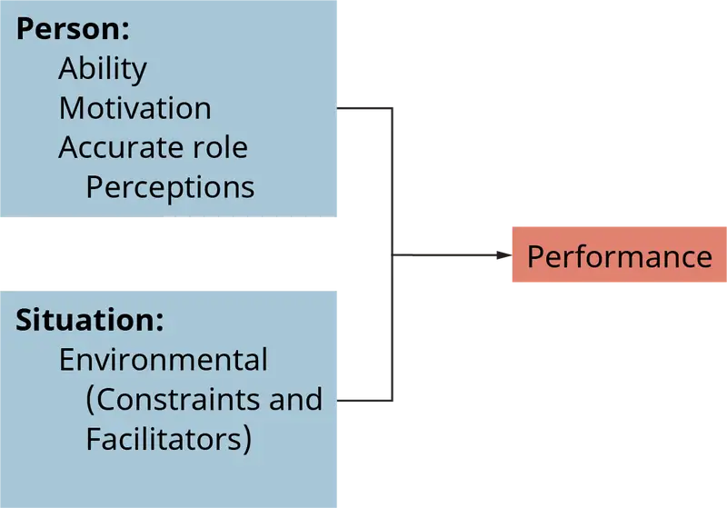
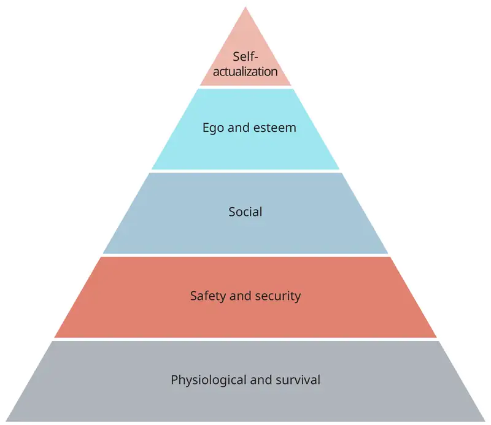
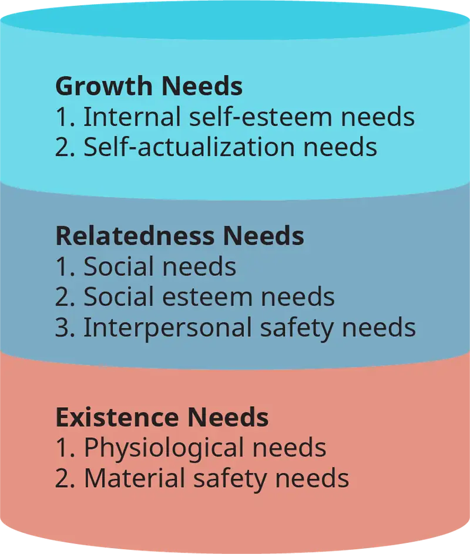
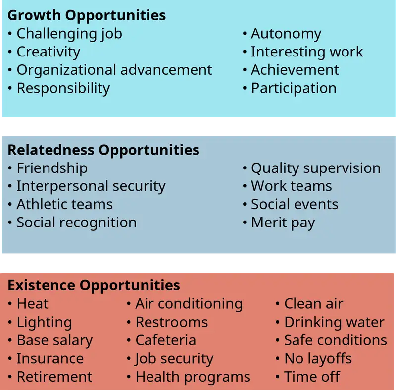
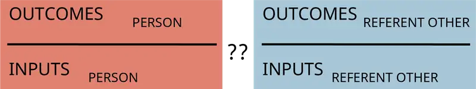
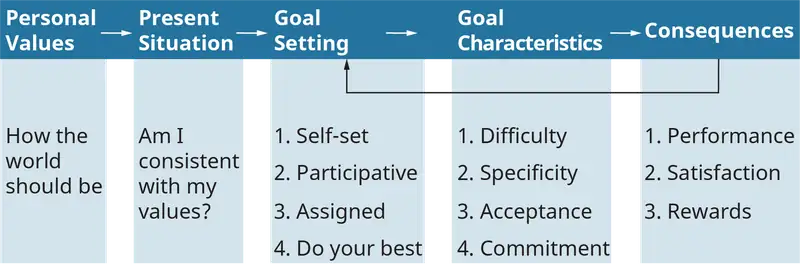
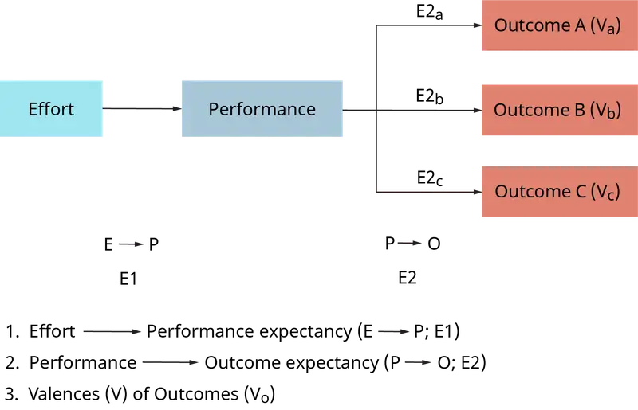

Chapter 14: Work Motivation for Performance¶
Introduction¶
Learning Outcomes
After reading this chapter, you should be able to answer these questions:
- Define motivation, and distinguish direction and intensity of motivation.
- Describe a content theory of motivation, and compare and contrast the main content theories of motivation: manifest needs theory, learned needs theory, Maslow’s hierarchy of needs, Alderfer’s ERG theory, Herzberg’s motivator-hygiene theory, and self-determination theory.
- Describe the process theories of motivation, and compare and contrast the main process theories of motivation: operant conditioning theory, equity theory, goal theory, and expectancy theory.
- Describe the modern advancements in the study of human motivation.
Exploring Managerial Careers: Bridget Anderson
Bridget Anderson thought life would be perfect out in the “real world.” After earning her degree in computer science, she landed a well-paying job as a programmer for a large nonprofit organization whose mission she strongly believed in. And—initially—she was happy with her job.
Lately however, Bridget gets a sick feeling in her stomach every morning when her alarm goes off. Why this feeling of misery? After all, she’s working in her chosen field in an environment that matches her values. What else could she want? She’s more puzzled than anyone.
It’s the end of her second year with the organization, and Bridget apprehensively schedules her annual performance evaluation. She knows she’s a competent programmer, but she also knows that lately she’s been motivated to do only the minimum required to get by. Her heart is just not in her work with this organization. Not exactly how she thought things would turn out, that’s for sure.
Bridget’s manager Kyle Jacobs surprises her when he begins the evaluation by inquiring about her professional goals. She admits that she hasn’t thought much about her future. Kyle asks if she’s content in her current position and if she feels that anything is missing. Suddenly, Bridget realizes that she does want more professionally.
Question: Are Bridget’s motivational problems intrinsic or extrinsic? Which of her needs are currently not being met? What steps should she and her manager take to improve her motivation and ultimately her performance?
Outcome: Once Bridget admits that she’s unhappy with her position as a computer programmer, she’s ready to explore other possibilities. She and Kyle brainstorm for tasks that will motivate her and bring her greater job satisfaction. Bridget tells Kyle that while she enjoys programming, she feels isolated and misses interacting with other groups in the organization. She also realizes that once she had mastered the initial learning curve, she felt bored. Bridget is ready for a challenge.
Kyle recommends that Bridget move to an information systems team as their technical representative. The team can use Bridget’s knowledge of programming, and Bridget will be able to collaborate more frequently with others in the organization.
Bridget and Kyle set specific goals to satisfy her needs to achieve and to work collaboratively. One of Bridget’s goals is to take graduate classes in management and information systems. She hopes that this will lead to an MBA and, eventually, to a position as a team leader. Suddenly the prospect of going to work doesn’t seem so grim—and lately, Bridget’s been beating her alarm!
If you’ve ever worked with a group of people, and we all have, you have no doubt noticed differences in their performance. Researchers have pondered these differences for many years. Indeed, John B. Watson first studied this issue in the early 1900s. Performance is, of course, an extremely important issue to employers because organizations with high-performing employees will almost always be more effective.
To better understand why people perform at different levels, researchers consider the major determinants of performance: ability, effort (motivation), accurate role perceptions, and environmental factors (see Figure 14.2). Each performance determinant is important, and a deficit in one can seriously affect the others. People who don’t understand what is expected of them will be constrained by their own inaccurate role perceptions, even if they have strong abilities and motivation and the necessary resources to perform their job. None of the performance determinants can compensate for a deficiency in any of the other determinants. Thus, a manager cannot compensate for an employee’s lack of skills and ability by strengthening their motivation.

14.1 Motivation: Direction and Intensity¶
- Define motivation and distinguish direction and intensity of motivation.
Ability refers to the knowledge, skills, and receptiveness to learning that a person brings to a task or job. Knowledge is what a person knows. Skill is their capacity to perform some particular activity (like welding or accounting), including knowing what is expected of them (called accurate role perceptions). Receptiveness to learning is a function of how quickly a person acquires new knowledge. Some people have more ability than others, and high-ability people generally perform better than low-ability people (although we will see that this is not always the case).
Accurate role perceptions refer to how well an individual understands their organizational role. This includes the goals (outcomes) the person is expected to achieve and the process by which the goals will be achieved. An employee who has accurate role perceptions knows both their expected outcomes and how to go about making those outcomes a reality. Incomplete or inaccurate role perceptions limit employees’ capacity to meet expectations, regardless of their abilities and motivation.
The performance environment refers to those factors that impact employees’ performance but are essentially out of their control. Many environmental factors influence performance. Some factors facilitate performance, while others constrain it. A word processor who has to work with a defective personal computer is certainly not going to perform at peak levels, regardless of ability or desire. Students who are working full time and carrying a full load of classes may not do as well on an exam as they would if they could cut back on their work hours, despite the fact that they have high ability and high motivation.
Motivation is the fourth major factor that determines whether a person will perform a task well. Motivation is a force within or outside of the body that energizes, directs, and sustains human behavior. Within the body, examples might be needs, personal values, and goals, while an incentive might be seen as a force outside of the body. The word stems from its Latin root movere, which means “to move.” Generally speaking, motivation arises as a consequence of a person’s desire to (1) fulfill unmet needs or (2) resolve conflicting thoughts that produce anxiety (an unpleasant experience). There are many ways in which we describe and categorize human needs, as we will see later in this chapter. Certain needs are fundamental to our existence, like the need for food and water. When we are hungry, we are energized to satisfy that need by securing and ingesting food. Our other needs operate in a similar manner. When a need is unfulfilled, we are motivated to engage in behaviors that will satisfy it. The same is true for situations in which we experience conflicting thoughts. When we find ourselves in situations inconsistent with our beliefs, values, or expectations, we endeavor to eliminate the inconsistency. We either change the situation, or we change our perception of it. In both cases, motivation arises out of our interaction with and perception of a particular situation. We perceive the situation as satisfying our needs, or not. Motivation is thus a result of our interacting with situations to satisfy unmet needs or to resolve cognitive dissonance.
Simply stated, work motivation is the amount of effort a person exerts to achieve a certain level of job performance. Some people try very hard to perform their jobs well. They work long hours, even if it interferes with their family life. Highly motivated people go the “extra mile.” High scorers on an exam make sure they know the examination material to the best of their ability, no matter how much midnight oil they have to burn. Other students who don’t do as well may just want to get by—football games and parties are a lot more fun, after all.
Motivation is of great interest to employers: All employers want their people to perform to the best of their abilities. They take great pains to screen applicants to make sure they have the necessary abilities and motivation to perform well. They endeavor to supply all the necessary resources and a good work environment. Yet motivation remains a difficult factor to manage. As a result, it receives the most attention from organizations and researchers alike, who ask the perennial question “What motivates people to perform well?”
In this chapter we look at current answers to this question. What work conditions foster motivation? How can theories of motivation help us understand the general principles that guide organizational behavior? Rather than analyze why a particular student studies hard for a test, we’ll look at the underlying principles of our general behavior in a variety of situations (including test taking). We also discuss the major theories of motivation, along with their implications for management and organizational behavior. By the end of this chapter you should have a better understanding of why some people are more motivated than others. Successful employees know what they want to achieve (direction), and they persist until they achieve their goals (intensity).
Our discussion thus far implies that motivation is a matter of effort. This is only partially true. Motivation has two major components: direction and intensity. Direction is what a person wants to achieve, what they intend to do. It implies a target that motivated people try to “hit.” That target may be to do well on a test. Or it may be to perform better than anyone else in a work group. Intensity is how hard people try to achieve their targets. Intensity is what we think of as effort. It represents the energy we expend to accomplish something. If our efforts are getting nowhere, will we try different strategies to succeed? (High-intensity-motivated people are persistent!)
It is important to distinguish the direction and intensity aspects of motivation. If either is lacking, performance will suffer. A person who knows what they want to accomplish (direction) but doesn’t exert much effort (intensity) will not succeed. (Scoring 100 percent on an exam—your target—won’t happen unless you study!) Conversely, people who don’t have a direction (what they want to accomplish) probably won’t succeed either. (At some point you have to decide on a major if you want to graduate, even if you do have straight As.)
Employees’ targets don’t always match with what their employers want. Absenteeism (some employees call this “calling in well”) is a major example. Pursuing your favorite hobby (your target) on a workday (your employer’s target) is a conflict in direction; below, we’ll examine some theories about why this conflict occurs.
There is another reason why employees’ targets are sometimes contrary to their employers’—sometimes employers do not ensure that employees understand what the employer wants. Employees can have great intensity but poor direction. It is management’s job to provide direction: Should we stress quality as well as quantity? Work independently or as a team? Meet deadlines at the expense of costs? Employees flounder without direction. Clarifying direction results in accurate role perceptions, the behaviors employees think they are expected to perform as members of an organization. Employees with accurate role perceptions understand their purpose in the organization and how the performance of their job duties contributes to organizational objectives. Some motivation theorists assume that employees know the correct direction for their jobs. Others do not. These differences are highlighted in the discussion of motivation theories below.
At this point, as we begin our discussion of the various motivation theories, it is reasonable to ask “Why isn’t there just one motivation theory?” The answer is that the different theories are driven by different philosophies of motivation. Some theorists assume that humans are propelled more by needs and instincts than by reasoned actions. Their content motivation theories focus on the content of what motivates people. Other theorists focus on the process by which people are motivated. Process motivation theories address how people become motivated—that is, how people perceive and think about a situation. Content and process theories endeavor to predict motivation in a variety of situations. However, none of these theories can predict what will motivate an individual in a given situation 100 percent of the time. Given the complexity of human behavior, a “grand theory” of motivation will probably never be developed.
A second reasonable question at this point is “Which theory is best?” If that question could be easily answered, this chapter would be quite short. The simple answer is that there is no “one best theory.” All have been supported by organizational behavior research. All have strengths and weaknesses. However, understanding something about each theory is a major step toward effective management practices.
Concept Check
Explain the two drivers of motivation: direction and intensity.
What are the differences between content and process theories of motivation?
Will there ever be a grand theory of motivation?
14.2 Content Theories of Motivation¶
- Describe a content theory of motivation.
The theories presented in this section focus on the importance of human needs. A common thread through all of them is that people have a variety of needs. A need is a human condition that becomes “energized” when people feel deficient in some respect. When we are hungry, for example, our need for food has been energized. Two features of needs are key to understanding motivation. First, when a need has been energized, we are motivated to satisfy it. We strive to make the need disappear. Hedonism, one of the first motivation theories, assumes that people are motivated to satisfy mainly their own needs (seek pleasure, avoid pain). Long since displaced by more refined theories, hedonism clarifies the idea that needs provide direction for motivation. Second, once we have satisfied a need, it ceases to motivate us. When we’ve eaten to satiation, we are no longer motivated to eat. Other needs take over and we endeavor to satisfy them. A manifest need is whatever need is motivating us at a given time. Manifest needs dominate our other needs.
Instincts are our natural, fundamental needs, basic to our survival. Our needs for food and water are instinctive. Many needs are learned. We are not born with a high (or low) need for achievement—we learn to need success (or failure). The distinction between instinctive and learned needs sometimes blurs; for example, is our need to socialize with other people instinctive or learned?
Manifest Needs Theory¶
One major problem with the need approach to motivation is that we can make up a need for every human behavior. Do we “need” to talk or be silent? The possibilities are endless. In fact, around the 1920s, some 6,000 human needs had been identified by behavioral scientists!
Henry A. Murray recognized this problem and condensed the list into a few instinctive and learned needs. Instincts, which Murray called primary needs, include physiological needs for food, water, sex (procreation), urination, and so on. Learned needs, which Murray called secondary needs, are learned throughout one’s life and are basically psychological in nature. They include such needs as the need for achievement, for love, and for affiliation (see Table 14.1).
Table 14.1
| Sample Items from Murray’s List of Needs | |
|---|---|
| Social Motive | Brief Definition |
| Abasement | To submit passively to external force. To accept injury, blame, criticism, punishment. To surrender. |
| Achievement | To accomplish something difficult. To master, manipulate, or organize physical objects, human beings, or ideas. |
| Affiliation | To draw near and enjoyably cooperate or reciprocate with an allied other (another who resembles the subject or who likes the subject). To please and win affection of a coveted object. To adhere and remain loyal to a friend. |
| Aggression | To overcome opposition forcefully. To fight. To revenge an injury. To attack, injure, or kill another. To oppose forcefully or punish another. |
| Autonomy | To get free, shake off restraint, break out of confinement. |
| Counteraction | To master or make up for a failure by restriving. |
| Defendance | To defend the self against assault, criticism, and blame. To conceal or justify a misdeed, failure, or humiliation. To vindicate the ego. |
| Deference | To admire and support a superior. To praise, honor, or eulogize. |
| Dominance | To control one’s human environment. To influence or direct the behavior of others by suggestion, seduction, persuasion, or command. |
| Exhibition | To make an impression. To be seen and heard. To excite, amaze, fascinate, entertain, shock, intrigue, amuse, or entice others. |
| Harm avoidance | To avoid pain, physical injury, illness, and death. To escape from a dangerous situation. To take precautionary measures. |
| Infavoidance | To avoid humiliation. To quit embarrassing situations or to avoid conditions that may lead to belittlement or the scorn or indifference of others. |
| Nurturance | To give sympathy and gratify the needs of a helpless object: an infant or any object that is weak, disabled, tired, inexperienced, infirm, defeated, humiliated, lonely, dejected, sick, or mentally confused. To assist an object in danger. To feed, help, support, console, protect, comfort, nurse, heal. |
| Order | To put things in order. To achieve cleanliness, arrangement, organization, balance, neatness, tidiness, and precision. |
| Play | To act for “fun” without further purpose. To like to laugh and make jokes. To seek enjoyable relaxation from stress. |
| Rejection | To separate oneself from a negatively valued object. To exclude, abandon, expel, or remain indifferent to an inferior object. To snub or jilt an object. |
| Sentience | To seek and enjoy sensuous impressions. |
| Sex | To form and further an erotic relationship. To have sexual intercourse. |
| Succorance | To have one’s needs gratified by the sympathetic aid of an allied object. |
| Understanding | To ask or answer general questions. To be interested in theory. To speculate, formulate, analyze, and generalize. |
| Source: Adapted from C. S. Hall and G. Lindzey, Theories of Personality. Sample items from Murray’s List of Needs. Copyright 1957 by John Wiley & Sons, New York. | |
Murray’s main premise was that people have a variety of needs, but only a few are expressed at a given time. When a person is behaving in a way that satisfies some need, Murray called the need manifest. Manifest needs theory assumes that human behavior is driven by the desire to satisfy needs. Lucretia’s chattiness probably indicates her need for affiliation. This is a manifest need. But what if Lucretia also has a need to dominate others? Could we detect that need from her current behavior? If not, Murray calls this a latent need. A latent need cannot be inferred from a person’s behavior at a given time, yet the person may still possess that need. The person may not have had the opportunity to express the need. Or she may not be in the proper environment to solicit behaviors to satisfy the need. Lucretia’s need to dominate may not be motivating her current behavior because she is with friends instead of coworkers.
Manifest needs theory laid the groundwork for later theories, most notably McClelland’s learned needs theory, that have greatly influenced the study of organizational behavior. The major implication for management is that some employee needs are latent. Managers often assume that employees do not have certain needs because the employees never try to satisfy them at work. Such needs may exist (latent needs); the work environment is simply not conducive to their manifestation (manifest needs). A reclusive accountant may not have been given the opportunity to demonstrate their need for achievement because they never received challenging assignments.
Learned Needs Theory¶
David C. McClelland and his associates (especially John W. Atkinson) built on the work of Murray for over 50 years. Murray studied many different needs, but very few in any detail. McClelland’s research differs from Murray’s in that McClelland studied three needs in depth: the need for achievement, the need for affiliation, and the need for power (often abbreviated, in turn, as nAch, nAff, and nPow). McClelland believes that these three needs are learned, primarily in childhood. But he also believes that each need can be taught, especially nAch. McClelland’s research is important because much of current thinking about organizational behavior is based on it.
Need for Achievement¶
The need for achievement (nAch) is how much people are motivated to excel at the tasks they are performing, especially tasks that are difficult. Of the three needs studied by McClelland, nAch has the greatest impact. The need for achievement varies in intensity across individuals. This makes nAch a personality trait as well as a statement about motivation. When nAch is being expressed, making it a manifest need, people try hard to succeed at whatever task they’re doing. We say these people have a high achievement motive. A motive is a source of motivation; it is the need that a person is attempting to satisfy. Achievement needs become manifest when individuals experience certain types of situations.
To better understand the nAch motive, it’s helpful to describe high-nAch people. You probably know a few of them. They’re constantly trying to accomplish something. One of your authors has a father-in-law who would much rather spend his weekends digging holes (for various home projects) than going fishing. Why? Because when he digs a hole, he gets results. In contrast, he can exert a lot of effort and still not catch a fish. A lot of fishing, no fish, and no results equal failure!
McClelland describes three major characteristics of high-nAch people:
- They feel personally responsible for completing whatever tasks they are assigned. They accept credit for success and blame for failure.
- They like situations where the probability of success is moderate. High-nAch people are not motivated by tasks that are too easy or extremely difficult. Instead, they prefer situations where the outcome is uncertain, but in which they believe they can succeed if they exert enough effort. They avoid both simple and impossible situations.
- They have very strong desires for feedback about how well they are doing. They actively seek out performance feedback. It doesn’t matter whether the information implies success or failure. They want to know whether they have achieved or not. They constantly ask how they are doing, sometimes to the point of being a nuisance.
Why is nAch important to organizational behavior? The answer is, the success of many organizations is dependent on the nAch levels of their employees. This is especially true for jobs that require self-motivation and managing others. Employees who continuously have to be told how to do their jobs require an overly large management team, and too many layers of management spell trouble in the current marketplace. Today’s flexible, cost-conscious organizations have no room for top-heavy structures; their high-nAch employees perform their jobs well with minimal supervision.
Many organizations manage the achievement needs of their employees poorly. A common perception about people who perform unskilled jobs is that they are unmotivated and content doing what they are doing. But, if they have achievement needs, the job itself creates little motivation to perform. It is too easy. There are not enough workers who feel personal satisfaction for having the cleanest floors in a building. Designing jobs that are neither too challenging nor too boring is key to managing motivation. Job enrichment is one effective strategy; this frequently entails training and rotating employees through different jobs, or adding new challenges.
Need for Affiliation¶
This need is the second of McClelland’s learned needs. The need for affiliation (nAff) reflects a desire to establish and maintain warm and friendly relationships with other people. As with nAch, nAff varies in intensity across individuals. As you would expect, high-nAff people are very sociable. They’re more likely to go bowling with friends after work than to go home and watch television. Other people have lower affiliation needs. This doesn’t mean that they avoid other people, or that they dislike others. They simply don’t exert as much effort in this area as high-nAff people do.
The nAff has important implications for organizational behavior. High-nAff people like to be around other people, including other people at work. As a result, they perform better in jobs that require teamwork. Maintaining good relationships with their coworkers is important to them, so they go to great lengths to make the work group succeed because they fear rejection. So, high-nAff employees will be especially motivated to perform well if others depend on them. In contrast, if high-nAff people perform jobs in isolation from other people, they will be less motivated to perform well. Performing well on this job won’t satisfy their need to be around other people.
Effective managers carefully assess the degree to which people have high or low nAff. Employees high in nAff should be placed in jobs that require or allow interactions with other employees. Jobs that are best performed alone are more appropriate for low-nAff employees, who are less likely to be frustrated.
Need for Power¶
The third of McClelland’s learned needs, the need for power (nPow), is the need to control things, especially other people. It reflects a motivation to influence and be responsible for other people. An employee who is often talkative, gives orders, and argues a lot is motivated by the need for power over others.
Employees with high nPow can be beneficial to organizations. High-nPow people do have effective employee behaviors, but at times they’re disruptive. A high-nPow person may try to convince others to do things that are detrimental to the organization. So, when is this need good, and when is it bad? Again, there are no easy answers. McClelland calls this the “two faces of power.” A personal power seeker endeavors to control others mostly for the sake of dominating them. They want others to respond to their wishes whether or not it is good for the organization. They “build empires,” and they protect them.
McClelland’s other power seeker is the social power seeker. A high social power seeker satisfies needs for power by influencing others, like the personal power seeker. They differ in that they feel best when they have influenced a work group to achieve the group’s goals, and not some personal agenda. High social power seekers are concerned with goals that a work group has set for itself, and they are motivated to influence others to achieve the goal. This need is oriented toward fulfilling responsibilities to the employer, not to the self.
McClelland has argued that the high need for social power is the most important motivator for successful managers. Successful managers tend to be high in this type of nPow. High need for achievement can also be important, but it sometimes results in too much concern for personal success and not enough for the employer’s success. The need for affiliation contributes to managerial success only in those situations where the maintenance of warm group relations is as important as getting others to work toward group goals.
The implication of McClelland’s research is that organizations should try to place people with high needs for social power in managerial jobs. It is critical, however, that those managerial jobs allow the employee to satisfy the nPow through social power acquisition. Otherwise, a manager high in nPow may satisfy this need through acquisition of personal power, to the detriment of the organization.
Ethics in Practice: Corporate Social Responsibility as a Motivating Force
Whatever their perspective, most people have a cause that they are passionate about. Bitcoin or net neutrality, sea levels or factory farming—social causes bind us to a larger context or assume a higher purpose for living better.
So what motivates employees to give their all, work creatively, and be fully engaged? According to CB Bhattacharya, the Pietro Ferrero Chair in Sustainability at ESMT European School of Management and Technology in Berlin, Germany, employment engagement, or how positive employees feel about their current job, was at an all-time low globally in 2016: 13 percent. But not all companies battle such low engagement rates. Unilever employees more than 170,000 workers globally and has an employ engagement level around 80 percent. How? Bhattacharya credits the success of Unilever, and other companies with similar engagement levels, to an emphasis on a “sustainable business model.” He outlines eight steps that companies take to move sustainability and social responsibility from buzzwords to a company mission capable of motivating employees (Knowledge @ Wharton 2016).
According to Bhattacharya, a company needs to first define what it does and its long-term purpose, and then reconcile its sustainability goals with its economic goals. With its purpose and goals defined, it can then educate the workforce on sustainable methods to create knowledge and competence. Champions for the effort must be found throughout the organization, not just at the top. Competition should be encouraged among employees to find and embrace new goals. Sustainability should be visible both within and outside the company. Sustainability should be tied to a higher purpose and foster a sense of unity not simply among employees, but even with competition at a societal level (Knowledge @ Wharton 2016).
Other companies have made social responsibility an everyday part of what they do. Launched in 2013, Bombas is the brain child of Randy Goldberg and David Heath. Goldberg and Heath discovered that socks are the most-requested clothing at homeless shelters. In response, the two entrepreneurs launched a line of socks that not only “reinvents” the sock (they claim), but also helps those in need. For each pair of socks purchased, the company donates a pair of socks to someone in need (Mulvey 2017). According to the company website, “Bombas exists to help solve this problem, to support the homeless community, and to bring awareness to an under-publicized problem in the United States” (n.p.). Although the New York–based company is still growing, as of October 2017 Bombas had donated more than four million pairs of socks (Bombas 2017).
In 2016, the Royal Bank of Scotland (RBS) launched a pilot program called Jump in which employees participated in challenges on ways to save water and electricity, as well as other sustainability issues. At the end of the pilot, 95 percent of the employees reported that they felt the program had contributed to employee engagement, team building, and environmental stability. Given the success of the program, in 2017 it was expanded to all RBS sites and a smartphone app was added to help employees participate in the challenges (Barton 2017).
Placing a company in a larger context and adding a second, higher purpose than the established company goals motivates employees to police the company itself to be a better global citizen. Companies benefit from reduced waste and increased employee engagement. Many companies are successfully motivating their staff, and working toward more sustainable practices, while improving lives directly.
Sources:
Barton, Tynan. 2017. “RBS boosts employee motivation and engagement through its CSR approach.” employee benefits. https://www.employeebenefits.co.uk/issues/april-2017/rbs-boosts-employee-motivation-engagement-csr-approach/
Bombas. 2017. “Giving Back.” https://bombas.com/pages/giving-back
Knowledge @ Wharton. 2016. “How Companies Can Tap Sustainability to Motivate Staff.” http://knowledge.wharton.upenn.edu/article/how-companies-tap-sustainability-to-motivate-staff/
Mulvey, Kelsey. 2017. “This company spent two years perfecting gym socks, and it paid off.” Business Insider. http://www.businessinsider.com/bombas-athletic-sock-review-2017-1
- Do you think it is a social responsibility to promote sustainable practices? Why or why not?
- Do you think most companies’ CSR programs are essentially PR gimmicks? Why or why not? Give examples.
Maslow’s Hierarchy of Needs¶
Any discussion of needs that motivate performance would be incomplete without considering Abraham Maslow. Thousands of managers in the 1960s were exposed to Maslow’s theory through the popular writings of Douglas McGregor. Today, many of them still talk about employee motivation in terms of Maslow’s theory.
Maslow was a psychologist who, based on his early research with primates (monkeys), observations of patients, and discussions with employees in organizations, theorized that human needs are arranged hierarchically. That is, before one type of need can manifest itself, other needs must be satisfied. For example, our need for water takes precedence over our need for social interaction (this is also called prepotency). We will always satisfy our need for water before we satisfy our social needs; water needs have prepotency over social needs. Maslow’s theory differs from others that preceded it because of this hierarchical, prepotency concept.
Maslow went on to propose five basic types of human needs. This is in contrast to the thousands of needs that earlier researchers had identified, and also fewer than Murray identified in his theory. Maslow condensed human needs into a manageable set. Those five human needs, in the order of prepotency in which they direct human behavior, are:
- Physiological and survival needs. These are the most basic of human needs, and include the needs for water, food, sex, sleep, activity, stimulation, and oxygen.
- Safety and security needs. These needs invoke behaviors that assure freedom from danger. This set of needs involves meeting threats to our existence, including extremes in environmental conditions (heat, dust, and so on), assault from other humans, tyranny, and murder. In other words, satisfaction of these needs prevents fear and anxiety while adding stability and predictability to life.
- Social needs. These needs reflect human desires to be the target of affection and love from others. They are especially satisfied by the presence of spouses, children, parents, friends, relatives, and others to whom we feel close. Feelings of loneliness and rejection are symptoms that this need has not been satisfied.
- Ego and esteem. Esteem needs go beyond social needs. They reflect our need to be respected by others, and to have esteem for ourselves. It is one thing to be liked by others. It is another thing to be respected for our talents and abilities. Ego and esteem needs have internal (self) and external (others) focuses. An internal focus includes desires for achievement, strength, competence, confidence, and independence. An external focus includes desires to have prestige, recognition, appreciation, attention, and respect from others. Satisfaction of external esteem needs can lead to satisfaction of internal esteem needs.
- Self-actualization. Self-actualization needs are the most difficult to describe. Unlike the other needs, the need for self-actualization is never completely satisfied. Self-actualization involves a desire for self-fulfillment, “to become more and more what one is, to become everything that one is capable of becoming.” Because people are so different in their strengths and weaknesses, in capacities and limitations, the meaning of self-actualization varies greatly. Satisfying self-actualization needs means developing all of our special abilities to their fullest degree.
Figure 14.5 A protester at an anti-war demonstration in Seattle held up this sign. Where would you place that on Maslow’s hierarchy of needs?
Figure 14.6 illustrates Maslow’s proposed hierarchy of needs. According to his theory, people first direct their attention to satisfying their lower-order needs. Those are the needs at the bottom of the pyramid (physiological, safety, and security). Once those needs have been satisfied, the next level, social needs, become energized. Once satisfied, we focus on our ego and esteem needs. Maslow believed that most people become fixated at this level. That is, most people spend much of their lives developing self-esteem and the esteem of others. But, once those esteem needs are satisfied, Maslow predicted that self-actualization needs would dominate. There are no higher levels in the pyramid, because self-actualization needs can never be fully satisfied. They represent a continuing process of self-development and self-improvement that, once satisfied on one dimension (painting), create motivation to continue on other dimensions (sculpting). One wonders if athletes like Tim Tebow are self-actualizing when they participate in multiple sporting endeavors at the professional level.

An overriding principle in this theory is that a person’s attention (direction) and energy (intensity) will focus on satisfying the lowest-level need that is not currently satisfied. Needs can also be satisfied at some point but become active (dissatisfied) again. Needs must be “maintained” (we must continue to eat occasionally). According to Maslow, when lower-level needs are reactivated, we once again concentrate on that need. That is, we lose interest in the higher-level needs when lower-order needs are energized.
The implications of Maslow’s theory for organizational behavior are as much conceptual as they are practical. The theory posits that to maximize employee motivation, employers must try to guide workers to the upper parts of the hierarchy. That means that the employer should help employees satisfy lower-order needs like safety and security and social needs. Once satisfied, employees will be motivated to build esteem and respect through their work achievements. Figure 14.6 shows how Maslow’s theory relates to factors that organizations can influence. For example, by providing adequate pay, safe working conditions, and cohesive work groups, employers help employees satisfy their lower-order needs. Once satisfied, challenging jobs, additional responsibilities, and prestigious job titles can help employees satisfy higher-order esteem needs.
Maslow’s theory is still popular among practicing managers. Organizational behavior researchers, however, are not as enamored with it because research results don’t support Maslow’s hierarchical notion. Apparently, people don’t go through the five levels in a fixed fashion. On the other hand, there is some evidence that people satisfy the lower-order needs before they attempt to satisfy higher-order needs. Refinements of Maslow’s theory in recent years reflect this more limited hierarchy. The self-assessment below will allow you to evaluate the strength of your five needs.
Alderfer’s ERG Theory¶
Clayton Alderfer observed that very few attempts had been made to test Maslow’s full theory. Further, the evidence accumulated provided only partial support. During the process of refining and extending Maslow’s theory, Alderfer provided another need-based theory and a somewhat more useful perspective on motivation. Alderfer’s ERG theory compresses Maslow’s five need categories into three: existence, relatedness, and growth. In addition, ERG theory details the dynamics of an individual’s movement between the need categories in a somewhat more detailed fashion than typically characterizes interpretations of Maslow’s work.
As shown in Figure 14.7, the ERG model addresses the same needs as those identified in Maslow’s work:

- Existence needs include physiological and material safety needs. These needs are satisfied by material conditions and not through interpersonal relations or personal involvement in the work setting.
- Relatedness needs include all of Maslow’s social needs, plus social safety and social esteem needs. These needs are satisfied through the exchange of thoughts and feelings with other people.
- Growth needs include self-esteem and self-actualization needs. These needs tend to be satisfied through one’s full involvement in work and the work setting.
Figure 14.8 identifies a number of ways in which organizations can help their members satisfy these three needs.

Four components—satisfaction progression, frustration, frustration regression, and aspiration—are key to understanding Alderfer’s ERG theory. The first of these, satisfaction progression, is in basic agreement with Maslow’s process of moving through the needs. As we increasingly satisfy our existence needs, we direct energy toward relatedness needs. As these needs are satisfied, our growth needs become more active. The second component, frustration, occurs when we attempt but fail to satisfy a particular need. The resulting frustration may make satisfying the unmet need even more important to us—unless we repeatedly fail to satisfy that need. In this case, Alderfer’s third component, frustration regression, can cause us to shift our attention to a previously satisfied, more concrete, and verifiable need. Lastly, the aspiration component of the ERG model notes that, by its very nature, growth is intrinsically satisfying. The more we grow, the more we want to grow. Therefore, the more we satisfy our growth need, the more important it becomes and the more strongly we are motivated to satisfy it.
Alderfer’s model is potentially more useful than Maslow’s in that it doesn’t create false motivational categories. For example, it is difficult for researchers to ascertain when interaction with others satisfies our need for acceptance and when it satisfies our need for recognition. ERG also focuses attention explicitly on movement through the set of needs in both directions. Further, evidence in support of the three need categories and their order tends to be stronger than evidence for Maslow’s five need categories and their relative order.
Herzberg’s Motivator-Hygiene Theory¶
Clearly one of the most influential motivation theories throughout the 1950s and 1960s was Frederick Herzberg’s motivator-hygiene theory. This theory is a further refinement of Maslow’s theory. Herzberg argued that there are two sets of needs, instead of the five sets theorized by Maslow. He called the first set “motivators” (or growth needs). Motivators, which relate to the jobs we perform and our ability to feel a sense of achievement as a result of performing them, are rooted in our need to experience growth and self-actualization. The second set of needs he termed “hygienes.” Hygienes relate to the work environment and are based in the basic human need to “avoid pain.” According to Herzberg, growth needs motivate us to perform well and, when these needs are met, lead to the experience of satisfaction. Hygiene needs, on the other hand, must be met to avoid dissatisfaction (but do not necessarily provide satisfaction or motivation).
Hygiene factors are not directly related to the work itself (job content). Rather, hygienes refer to job context factors (pay, working conditions, supervision, and security). Herzberg also refers to these factors as “dissatisfiers” because they are frequently associated with dissatisfied employees. These factors are so frequently associated with dissatisfaction that Herzberg claims they never really provide satisfaction. When they’re present in sufficient quantities, we avoid dissatisfaction, but they do not contribute to satisfaction. Furthermore, since meeting these needs does not provide satisfaction, Herzberg concludes that they do not motivate workers.
Motivator factors involve our long-term need to pursue psychological growth (much like Maslow’s esteem and self-actualization needs). Motivators relate to job content. Job content is what we actually do when we perform our job duties. Herzberg considered job duties that lead to feelings of achievement and recognition to be motivators. He refers to these factors as “satisfiers” to reflect their ability to provide satisfying experiences. When these needs are met, we experience satisfaction. Because meeting these needs provides satisfaction, they motivate workers. More specifically, Herzberg believes these motivators lead to high performance (achievement), and the high performance itself leads to satisfaction.
The unique feature of Herzberg’s theory is that job conditions that prevent dissatisfaction do not cause satisfaction. Satisfaction and dissatisfaction are on different “scales” in his view. Hygienes can cause dissatisfaction if they are not present in sufficient levels. Thus, an employee can be dissatisfied with low pay. But paying him more will not cause long-term satisfaction unless motivators are present. Good pay by itself will only make the employee neutral toward work; to attain satisfaction, employees need challenging job duties that result in a sense of achievement. Employees can be dissatisfied, neutral, or satisfied with their jobs, depending on their levels of hygienes and motivators. Herzberg’s theory even allows for the possibility that an employee can be satisfied and dissatisfied at the same time—the “I love my job but I hate the pay” situation!
Herzberg’s theory has made lasting contributions to organizational research and managerial practice. Researchers have used it to identify the wide range of factors that influence worker reactions. Previously, most organizations attended primarily to hygiene factors. Because of Herzberg’s work, organizations today realize the potential of motivators. Job enrichment programs are among the many direct results of his research.
Herzberg’s work suggests a two-stage process for managing employee motivation and satisfaction. First, managers should address the hygiene factors. Intense forms of dissatisfaction distract employees from important work-related activities and tend to be demotivating. Thus, managers should make sure that such basic needs as adequate pay, safe and clean working conditions, and opportunities for social interaction are met. They should then address the much more powerful motivator needs, in which workers experience recognition, responsibility, achievement, and growth. If motivator needs are ignored, neither long-term satisfaction nor high motivation is likely. When motivator needs are met, however, employees feel satisfied and are motivated to perform well.
Self-Determination Theory¶
One major implication of Herzberg’s motivator-hygiene theory is the somewhat counterintuitive idea that managers should focus more on motivators than on hygienes. (After all, doesn’t everyone want to be paid well? Organizations have held this out as a chief motivator for decades!) Why might concentrating on motivators give better results? To answer this question, we must examine types of motivation. Organizational behavior researchers often classify motivation in terms of what stimulates it. In the case of extrinsic motivation, we endeavor to acquire something that satisfies a lower-order need. Jobs that pay well and that are performed in safe, clean working conditions with adequate supervision and resources directly or indirectly satisfy these lower-order needs. These “outside the person” factors are extrinsic rewards.
Factors “inside” the person that cause people to perform tasks, intrinsic motivation, arise out of performing a task in and of itself, because it is interesting or “fun” to do. The task is enjoyable, so we continue to do it even in the absence of extrinsic rewards. That is, we are motivated by intrinsic rewards, rewards that we more or less give ourselves. Intrinsic rewards satisfy higher-order needs like relatedness and growth in ERG theory. When we sense that we are valuable contributors, are achieving something important, or are getting better at some skill, we like this feeling and strive to maintain it.
Self-determination theory (SDT) seeks to explain not only what causes motivation, but also how extrinsic rewards affect intrinsic motivation. In SDT, extrinsic motivation refers to the performance of an activity in order to attain some valued outcome, while intrinsic motivation refers to performing an activity for the inherent satisfaction of the activity itself. SDT specifies when an activity will be intrinsically motivating and when it will not. Considerable numbers of studies have demonstrated that tasks are intrinsically motivating when they satisfy at least one of three higher-order needs: competence, autonomy, and relatedness. These precepts from SDT are entirely consistent with earlier discussions of theories by McClelland, Maslow, Alderfer, and Herzberg.
SDT takes the concepts of extrinsic rewards and intrinsic motivation further than the other need theories. SDT researchers have consistently found that as the level of extrinsic rewards increases, the amount of intrinsic motivation decreases. That is, SDT posits that extrinsic rewards not only do not provide intrinsic motivation, they diminish it. Think of this in terms of hobbies. Some people like to knit, others like to carve wood. They do it because it is intrinsically motivating; the hobby satisfies needs for competence, autonomy, and relatedness. But what happens if these hobbyists start getting paid well for their sweaters and carvings? Over time the hobby becomes less fun and is done in order to receive extrinsic rewards (money). Extrinsic motivation increases as intrinsic motivation decreases! When extrinsic rewards are present, people do not feel like what they do builds competence, is self-determined, or enhances relationships with others.
SDT theory has interesting implications for the management of organizational behavior. Some jobs are by their very nature uninteresting and unlikely to be made interesting. Automation has eliminated many such jobs, but they are still numerous. SDT would suggest that the primary way to motivate high performance for such jobs is to make performance contingent on extrinsic rewards. Relatively high pay is necessary to sustain performance on certain low-skill jobs. On the other hand, SDT would suggest that to enhance intrinsic motivation on jobs that are interesting, don’t focus only on increasing extrinsic rewards (like large pay bonuses). Instead, create even more opportunities for employees to satisfy their needs for competence, autonomy, and relatedness. That means giving them opportunities to learn new skills, to perform their jobs without interference, and to develop meaningful relationships with other customers and employees in other departments. Such actions enhance intrinsic rewards.
You may have noticed that content theories are somewhat quiet about what determines the intensity of motivation. For example, some people steal to satisfy their lower-order needs (they have high intensity). But most of us don’t steal. Why is this? Process theories of motivation attempt to explain this aspect of motivation by focusing on the intensity of motivation as well as its direction. According to self-determination theory, skilled workers who are given a chance to hone their skills and the freedom to practice their craft will be intrinsically motivated.
Concept Check
Understand the content theories of motivation.
Understand the contributions that Murray, McClelland, Maslow, Alderfer, and Herzberg made toward an understanding of human motivation.
14.3 Process Theories of Motivation¶
- Describe the process theories of motivation, and compare and contrast the main process theories of motivation: operant conditioning theory, equity theory, goal theory, and expectancy theory.
Process theories of motivation try to explain why behaviors are initiated. These theories focus on the mechanism by which we choose a target, and the effort that we exert to “hit” the target. There are four major process theories: (1) operant conditioning, (2) equity, (3) goal, and (4) expectancy.
Operant Conditioning Theory¶
Operant conditioning theory is the simplest of the motivation theories. It basically states that people will do those things for which they are rewarded and will avoid doing things for which they are punished. This premise is sometimes called the “law of effect.” However, if this were the sum total of conditioning theory, we would not be discussing it here. Operant conditioning theory does offer greater insights than “reward what you want and punish what you don’t,” and knowledge of its principles can lead to effective management practices.
Operant conditioning focuses on the learning of voluntary behaviors. The term operant conditioning indicates that learning results from our “operating on” the environment. After we “operate on the environment” (that is, behave in a certain fashion), consequences result. These consequences determine the likelihood of similar behavior in the future. Learning occurs because we do something to the environment. The environment then reacts to our action, and our subsequent behavior is influenced by this reaction.
The Basic Operant Model¶
According to operant conditioning theory, we learn to behave in a particular fashion because of consequences that resulted from our past behaviors. The learning process involves three distinct steps (see Table 14.2). The first step involves a stimulus (S). The stimulus is any situation or event we perceive that we then respond to. A homework assignment is a stimulus. The second step involves a response (R), that is, any behavior or action we take in reaction to the stimulus. Staying up late to get your homework assignment in on time is a response. (We use the words response and behavior interchangeably here.) Finally, a consequence (C) is any event that follows our response and that makes the response more or less likely to occur in the future. If Colleen Sullivan receives praise from her superior for working hard, and if getting that praise is a pleasurable event, then it is likely that Colleen will work hard again in the future. If, on the other hand, the superior ignores or criticizes Colleen’s response (working hard), this consequence is likely to make Colleen avoid working hard in the future. It is the experienced consequence (positive or negative) that influences whether a response will be repeated the next time the stimulus is presented.
Table 14.2 (Attribution: Copyright Rice University, OpenStax, under CC-BY 4.0 license)
| Process Theories of Motivation | |
|---|---|
| General Operant Model: S → R → C | |
| Ways to Strengthen the S → R Link | |
| 1. S → R → C+ | (Positive Reinforcement) |
| 2. S → R → C– | (Negative Reinforcement) |
| 3. S → R → (no C–) | (Avoidance Learning) |
| Ways to Weaken the S → R Link | |
| 1. S → R → (no C) | (Nonreinforcement) |
| 2. S → R → C– | (Punishment) |
Reinforcement occurs when a consequence makes it more likely the response/behavior will be repeated in the future. In the previous example, praise from Colleen’s superior is a reinforcer. Extinction occurs when a consequence makes it less likely the response/behavior will be repeated in the future. Criticism from Colleen’s supervisor could cause her to stop working hard on any assignment.
There are three ways to make a response more likely to recur: positive reinforcement, negative reinforcement, and avoidance learning. In addition, there are two ways to make the response less likely to recur: nonreinforcement and punishment.
Making a Response More Likely¶
According to reinforcement theorists, managers can encourage employees to repeat a behavior if they provide a desirable consequence, or reward, after the behavior is performed. A positive reinforcement is a desirable consequence that satisfies an active need or that removes a barrier to need satisfaction. It can be as simple as a kind word or as major as a promotion. Companies that provide “dinners for two” as awards to those employees who go the extra mile are utilizing positive reinforcement. It is important to note that there are wide variations in what people consider to be a positive reinforcer. Praise from a supervisor may be a powerful reinforcer for some workers (like high-nAch individuals) but not others.
Another technique for making a desired response more likely to be repeated is known as negative reinforcement. When a behavior causes something undesirable to be taken away, the behavior is more likely to be repeated in the future. Managers use negative reinforcement when they remove something unpleasant from an employee’s work environment in the hope that this will encourage the desired behavior. Ted doesn’t like being continually reminded by Philip to work faster (Ted thinks Philip is nagging him), so he works faster at stocking shelves to avoid being criticized. Philip’s reminders are a negative reinforcement for Ted.
Approach using negative reinforcement with extreme caution. Negative reinforcement is often confused with punishment. Punishment, unlike reinforcement (negative or positive), is intended to make a particular behavior go away (not be repeated). Negative reinforcement, like positive reinforcement, is intended to make a behavior more likely to be repeated in the future. In the previous example, Philip’s reminders simultaneously punished one behavior (slow stocking) and reinforced another (faster stocking). The difference is often a fine one, but it becomes clearer when we identify the behaviors we are trying to encourage (reinforcement) or discourage (punishment).
A third method of making a response more likely to occur involves a process known as avoidance learning. Avoidance learning occurs when we learn to behave in a certain way to avoid encountering an undesired or unpleasant consequence. We may learn to wake up a minute or so before our alarm clock rings so we can turn it off and not hear the irritating buzzer. Some workers learn to get to work on time to avoid the harsh words or punitive actions of their supervisors. Many organizational discipline systems rely heavily on avoidance learning by using the threat of negative consequences to encourage desired behavior. When managers warn an employee not to be late again, when they threaten to fire a careless worker, or when they transfer someone to an undesirable position, they are relying on the power of avoidance learning.
Making a Response Less Likely¶
At times it is necessary to discourage a worker from repeating an undesirable behavior. The techniques managers use to make a behavior less likely to occur involve doing something that frustrates the individual’s need satisfaction or that removes a currently satisfying circumstance. Punishment is an aversive consequence that follows a behavior and makes it less likely to reoccur.
Note that managers have another alternative, known as nonreinforcement, in which they provide no consequence at all following a worker’s response. Nonreinforcement eventually reduces the likelihood of that response reoccurring, which means that managers who fail to reinforce a worker’s desirable behavior are also likely to see that desirable behavior less often. If Philip never rewards Ted when he finishes stocking on time, for instance, Ted will probably stop trying to beat the clock. Nonreinforcement can also reduce the likelihood that employees will repeat undesirable behaviors, although it doesn’t produce results as quickly as punishment does. Furthermore, if other reinforcing consequences are present, nonreinforcement is unlikely to be effective.
While punishment clearly works more quickly than does nonreinforcement, it has some potentially undesirable side effects. Although punishment effectively tells a person what not to do and stops the undesired behavior, it does not tell them what they should do. In addition, even when punishment works as intended, the worker being punished often develops negative feelings toward the person who does the punishing. Although sometimes it is very difficult for managers to avoid using punishment, it works best when reinforcement is also used. An experiment conducted by two researchers at the University of Kansas found that using nonmonetary reinforcement in addition to punitive disciplinary measures was an effective way to decrease absenteeism in an industrial setting.
Schedules of Reinforcement¶
When a person is learning a new behavior, like how to perform a new job, it is desirable to reinforce effective behaviors every time they are demonstrated (this is called shaping). But in organizations it is not usually possible to reinforce desired behaviors every time they are performed, for obvious reasons. Moreover, research indicates that constantly reinforcing desired behaviors, termed continuous reinforcement, can be detrimental in the long run. Behaviors that are learned under continuous reinforcement are quickly extinguished (cease to be demonstrated). This is because people will expect a reward (the reinforcement) every time they display the behavior. When they don’t receive it after just a few times, they quickly presume that the behavior will no longer be rewarded, and they quit doing it. Any employer can change employees’ behavior by simply not paying them!
If behaviors cannot (and should not) be reinforced every time they are exhibited, how often should they be reinforced? This is a question about schedules of reinforcement, or the frequency at which effective employee behaviors should be reinforced. Much of the early research on operant conditioning focused on the best way to maintain the performance of desired behaviors. That is, it attempted to determine how frequently behaviors need to be rewarded so that they are not extinguished. Research zeroed in on four types of reinforcement schedules:
Fixed Ratio. With this schedule, a fixed number of responses (let’s say five) must be exhibited before any of the responses are reinforced. If the desired response is coming to work on time, then giving employees a $25 bonus for being punctual every day from Monday through Friday would be a fixed ratio of reinforcement.
Variable Ratio. A variable-ratio schedule reinforces behaviors, on average, a fixed number of times (again let’s say five). Sometimes the tenth behavior is reinforced, other times the first, but on average every fifth response is reinforced. People who perform under such variable-ratio schedules like this don’t know when they will be rewarded, but they do know that they will be rewarded.
Fixed Interval. In a fixed-interval schedule, a certain amount of time must pass before a behavior is reinforced. With a one-hour fixed-interval schedule, for example, a supervisor visits an employee’s workstation and reinforces the first desired behavior she sees. She returns one hour later and reinforces the next desirable behavior. This schedule doesn’t imply that reinforcement will be received automatically after the passage of the time period. The time must pass and an appropriate response must be made.
Variable Interval. The variable interval differs from fixed-interval schedules in that the specified time interval passes on average before another appropriate response is reinforced. Sometimes the time period is shorter than the average; sometimes it is longer.
Which type of reinforcement schedule is best? In general, continuous reinforcement is best while employees are learning their jobs or new duties. After that, variable-ratio reinforcement schedules are superior. In most situations the fixed-interval schedule produces the least effective results, with fixed ratio and variable interval falling in between the two extremes. But remember that effective behaviors must be reinforced with some type of schedule, or they may become extinguished.
Equity Theory¶
Suppose you have worked for a company for several years. Your performance has been excellent, you have received regular pay increases, and you get along with your boss and coworkers. One day you come to work to find that a new person has been hired to work at the same job that you do. You are pleased to have the extra help. Then, you find out the new person is making $100 more per week than you, despite your longer service and greater experience. How do you feel? If you’re like most of us, you’re quite unhappy. Your satisfaction has just evaporated. Nothing about your job has changed—you receive the same pay, do the same job, and work for the same supervisor. Yet, the addition of one new employee has transformed you from a happy to an unhappy employee. This feeling of unfairness is the basis for equity theory.
Equity theory states that motivation is affected by the outcomes we receive for our inputs compared to the outcomes and inputs of other people. This theory is concerned with the reactions people have to outcomes they receive as part of a “social exchange.” According to equity theory, our reactions to the outcomes we receive from others (an employer) depend both on how we value those outcomes in an absolute sense and on the circumstances surrounding their receipt. Equity theory suggests that our reactions will be influenced by our perceptions of the “inputs” provided in order to receive these outcomes (“Did I get as much out of this as I put into it?”). Even more important is our comparison of our inputs to what we believe others received for their inputs (“Did I get as much for my inputs as my coworkers got for theirs?”).
The Basic Equity Model¶
The fundamental premise of equity theory is that we continuously monitor the degree to which our work environment is “fair.” In determining the degree of fairness, we consider two sets of factors, inputs and outcomes (see Figure 14.11). Inputs are any factors we contribute to the organization that we feel have value and are relevant to the organization. Note that the value attached to an input is based on our perception of its relevance and value. Whether or not anyone else agrees that the input is relevant or valuable is unimportant to us. Common inputs in organizations include time, effort, performance level, education level, skill levels, and bypassed opportunities. Since any factor we consider relevant is included in our evaluation of equity, it is not uncommon for factors to be included that the organization (or even the law) might argue are inappropriate (such as age, sex, ethnic background, or social status).

Outcomes are anything we perceive as getting back from the organization in exchange for our inputs. Again, the value attached to an outcome is based on our perceptions and not necessarily on objective reality. Common outcomes from organizations include pay, working conditions, job status, feelings of achievement, and friendship opportunities. Both positive and negative outcomes influence our evaluation of equity. Stress, headaches, and fatigue are also potential outcomes. Since any outcome we consider relevant to the exchange influences our equity perception, we frequently include unintended factors (peer disapproval, family reactions).
Equity theory predicts that we will compare our outcomes to our inputs in the form of a ratio. On the basis of this ratio we make an initial determination of whether or not the situation is equitable. If we perceive that the outcomes we receive are commensurate with our inputs, we are satisfied. If we believe that the outcomes are not commensurate with our inputs, we are dissatisfied. This dissatisfaction can lead to ineffective behaviors for the organization if they continue. The key feature of equity theory is that it predicts that we will compare our ratios to the ratios of other people. It is this comparison of the two ratios that has the strongest effect on our equity perceptions. These other people are called referent others because we “refer to” them when we judge equity. Usually, referent others are people we work with who perform work of a similar nature. That is, referent others perform jobs that are similar in difficulty and complexity to the employee making the equity determination (see Figure 14.11).
Three conditions can result from this comparison. Our outcome-to-input ratio could equal the referent other’s. This is a state of equity. A second result could be that our ratio is greater than the referent other’s. This is a state of overreward inequity. The third result could be that we perceive our ratio to be less than that of the referent other. This is a state of underreward inequity.
Equity theory has a lot to say about basic human tendencies. The motivation to compare our situation to that of others is strong. For example, what is the first thing you do when you get an exam back in class? Probably look at your score and make an initial judgment as to its fairness. For a lot of people, the very next thing they do is look at the scores received by fellow students who sit close to them. A 75 percent score doesn’t look so bad if everyone else scored lower! This is equity theory in action.
Most workers in the United States are at least partially dissatisfied with their pay. Equity theory helps explain this. Two human tendencies create feelings of inequity that are not based in reality. One is that we tend to overrate our performance levels. For example, one study conducted by your authors asked more than 600 employees to anonymously rate their performance on a 7-point scale (1 = poor, 7 = excellent). The average was 6.2, meaning the average employee rated his or her performance as very good to excellent. This implies that the average employee also expects excellent pay increases, a policy most employers cannot afford if they are to remain competitive. Another study found that the average employee (one whose performance is better than half of the other employees and worse than the other half) rated her performance at the 80th percentile (better than 80 percent of the other employees, worse than 20 percent). Again it would be impossible for most organizations to reward the average employee at the 80th percentile. In other words, most employees inaccurately overrate the inputs they provide to an organization. This leads to perceptions of inequity that are not justified.
The second human tendency that leads to unwarranted perceptions of inequity is our tendency to overrate the outcomes of others. Many employers keep the pay levels of employees a “secret.” Still other employers actually forbid employees to talk about their pay. This means that many employees don’t know for certain how much their colleagues are paid. And, because most of us overestimate the pay of others, we tend to think that they’re paid more than they actually are, and the unjustified perceptions of inequity are perpetuated.
The bottom line for employers is that they need to be sensitive to employees’ need for equity. Employers need to do everything they can to prevent feelings of inequity because employees engage in effective behaviors when they perceive equity and ineffective behaviors when they perceive inequity.
Perceived Overreward Inequity¶
When we perceive that overreward inequity exists (that is, we unfairly make more than others), it is rare that we are so dissatisfied, guilty, or sufficiently motivated that we make changes to produce a state of perceived equity (or we leave the situation). Indeed, feelings of overreward, when they occur, are quite transient. Very few of us go to our employers and complain that we’re overpaid! Most people are less sensitive to overreward inequities than they are to underreward inequities. However infrequently they are used for overreward, the same types of actions are available for dealing with both types of inequity.
Perceived Underreward Inequity¶
When we perceive that underreward inequity exists (that is, others unfairly make more than we do), we will likely be dissatisfied, angered, and motivated to change the situation (or escape the situation) in order to produce a state of perceived equity. As we discuss shortly, people can take many actions to deal with underreward inequity.
Reducing Underreward Inequity¶
A simple situation helps explain the consequences of inequity. Two automobile workers in Detroit, John and Mary, fasten lug nuts to wheels on cars as they come down the assembly line, John on the left side and Mary on the right. Their inputs are equal (both fasten the same number of lug nuts at the same pace), but John makes $500 per week and Mary makes $600. Their equity ratios are thus:
| $500 | $600 |
| John: | <Mary: |
| 10 lug nuts/car | 10 lug nuts/car |
As you can see, their ratios are not equal; that is, Mary receives greater outcome for equal input. Who is experiencing inequity? According to equity theory, both John and Mary—underreward inequity for John, and overreward inequity for Mary. Mary’s inequity won’t last long (in real organizations), but in our hypothetical example, what might John do to resolve this?
Adams identified a number of things people do to reduce the tension produced by a perceived state of inequity. They change their own outcomes or inputs, or they change those of the referent other. They distort their own perceptions of the outcomes or inputs of either party by using a different referent other, or they leave the situation in which the inequity is occurring.
- Alter inputs of the person. The perceived state of equity can be altered by changing our own inputs, that is, by decreasing the quantity or quality of our performance. John can affect his own mini slowdown and install only nine lug nuts on each car as it comes down the production line. This, of course, might cause him to lose his job, so he probably won’t choose this alternative.
- Alter outcomes of the person. We could attempt to increase outcomes to achieve a state of equity, like ask for a raise, a nicer office, a promotion, or other positively valued outcomes. So John will likely ask for a raise. Unfortunately, many people enhance their outcomes by stealing from their employers.
- Alter inputs of the referent other. When underrewarded, we may try to achieve a state of perceived equity by encouraging the referent other to increase their inputs. We may demand, for example, that the referent other “start pulling their weight,” or perhaps help the referent other to become a better performer. It doesn’t matter that the referent other is already pulling their weight—remember, this is all about perception. In our example, John could ask Mary to put on two of his ten lug nuts as each car comes down the assembly line. This would not likely happen, however, so John would be motivated to try another alternative to reduce his inequity.
- Alter outcomes of the referent other. We can “correct” a state of underreward by directly or indirectly reducing the value of the other’s outcomes. In our example, John could try to get Mary’s pay lowered to reduce his inequity. This too would probably not occur in the situation described.
- Distort perceptions of inputs or outcomes. It is possible to reduce a perceived state of inequity without changing input or outcome. We simply distort our own perceptions of our inputs or outcomes, or we distort our perception of those of the referent other. Thus, John may tell himself that “Mary does better work than I thought” or “she enjoys her work much less than I do” or “she gets paid less than I realized.”
- Choose a different referent other. We can also deal with both over- and underreward inequities by changing the referent other (“my situation is really more like Ahmed’s”). This is the simplest and most powerful way to deal with perceived inequity: it requires neither actual nor perceptual changes in anybody’s input or outcome, and it causes us to look around and assess our situation more carefully. For example, John might choose as a referent other Bill, who installs dashboards but makes less money than John.
- Leave the situation. A final technique for dealing with a perceived state of inequity involves removing ourselves from the situation. We can choose to accomplish this through absenteeism, transfer, or termination. This approach is usually not selected unless the perceived inequity is quite high or other attempts at achieving equity are not readily available. Most automobile workers are paid quite well for their work. John is unlikely to find an equivalent job, so it is also unlikely that he will choose this option.
Implications of Equity Theory¶
Equity theory is widely used, and its implications are clear. In the vast majority of cases, employees experience (or perceive) underreward inequity rather than overreward. As discussed above, few of the behaviors that result from underreward inequity are good for employers. Thus, employers try to prevent unnecessary perceptions of inequity. They do this in a number of ways. They try to be as fair as possible in allocating pay. That is, they measure performance levels as accurately as possible, then give the highest performers the highest pay increases. Second, most employers are no longer secretive about their pay schedules. People are naturally curious about how much they are paid relative to others in the organization. This doesn’t mean that employers don’t practice discretion—they usually don’t reveal specific employees’ exact pay. But they do tell employees the minimum and maximum pay levels for their jobs and the pay scales for the jobs of others in the organization. Such practices give employees a factual basis for judging equity.
Supervisors play a key role in creating perceptions of equity. “Playing favorites” ensures perceptions of inequity. Employees want to be rewarded on their merits, not the whims of their supervisors. In addition, supervisors need to recognize differences in employees in their reactions to inequity. Some employees are highly sensitive to inequity, and a supervisor needs to be especially cautious around them. Everyone is sensitive to reward allocation. But “equity sensitives” are even more sensitive. A major principle for supervisors, then, is simply to implement fairness. Never base punishment or reward on whether or not you like an employee. Reward behaviors that contribute to the organization, and discipline those that do not. Make sure employees understand what is expected of them, and praise them when they do it. These practices make everyone happier and your job easier.
Goal Theory¶
No theory is perfect. If it was, it wouldn’t be a theory. It would be a set of facts. Theories are sets of propositions that are right more often than they are wrong, but they are not infallible. However, the basic propositions of goal theory* come close to being infallible. Indeed, it is one of the strongest theories in organizational behavior.
The Basic Goal-Setting Model¶
Goal theory states that people will perform better if they have difficult, specific, accepted performance goals or objectives., The first and most basic premise of goal theory is that people will attempt to achieve those goals that they intend to achieve. Thus, if we intend to do something (like get an A on an exam), we will exert effort to accomplish it. Without such goals, our effort at the task (studying) required to achieve the goal is less. Students whose goals are to get As study harder than students who don’t have this goal—we all know this. This doesn’t mean that people without goals are unmotivated. It simply means that people with goals are more motivated. The intensity of their motivation is greater, and they are more directed.
The second basic premise is that difficult goals result in better performance than easy goals. This does not mean that difficult goals are always achieved, but our performance will usually be better when we intend to achieve harder goals. Your goal of an A in Classical Mechanics at Cal Tech may not get you your A, but it may earn you a B+, which you wouldn’t have gotten otherwise. Difficult goals cause us to exert more effort, and this almost always results in better performance.
Another premise of goal theory is that specific goals are better than vague goals. We often wonder what we need to do to be successful. Have you ever asked a professor “What do I need to do to get an A in this course?” If she responded “Do well on the exams,” you weren’t much better off for having asked. This is a vague response. Goal theory says that we perform better when we have specific goals. Had your professor told you the key thrust of the course, to turn in all the problem sets, to pay close attention to the essay questions on exams, and to aim for scores in the 90s, you would have something concrete on which to build a strategy.
A key premise of goal theory is that people must accept the goal. Usually we set our own goals. But sometimes others set goals for us. Your professor telling you your goal is to “score at least a 90 percent on your exams” doesn’t mean that you’ll accept this goal. Maybe you don’t feel you can achieve scores in the 90s. Or, you’ve heard that 90 isn’t good enough for an A in this class. This happens in work organizations quite often. Supervisors give orders that something must be done by a certain time. The employees may fully understand what is wanted, yet if they feel the order is unreasonable or impossible, they may not exert much effort to accomplish it. Thus, it is important for people to accept the goal. They need to feel that it is also their goal. If they do not, goal theory predicts that they won’t try as hard to achieve it.
Goal theory also states that people need to commit to a goal in addition to accepting it. Goal commitment is the degree to which we dedicate ourselves to achieving a goal. Goal commitment is about setting priorities. We can accept many goals (go to all classes, stay awake during classes, take lecture notes), but we often end up doing only some of them. In other words, some goals are more important than others. And we exert more effort for certain goals. This also happens frequently at work. A software analyst’s major goal may be to write a new program. Her minor goal may be to maintain previously written programs. It is minor because maintaining old programs is boring, while writing new ones is fun. Goal theory predicts that her commitment, and thus her intensity, to the major goal will be greater.
Allowing people to participate in the goal-setting process often results in higher goal commitment. This has to do with ownership. And when people participate in the process, they tend to incorporate factors they think will make the goal more interesting, challenging, and attainable. Thus, it is advisable to allow people some input into the goal-setting process. Imposing goals on them from the outside usually results in less commitment (and acceptance).
The basic goal-setting model is shown in Figure 14.12. The process starts with our values. Values are our beliefs about how the world should be or act, and often include words like “should” or “ought.” We compare our present conditions against these values. For example, Randi holds the value that everyone should be a hard worker. After measuring her current work against this value, Randi concludes that she doesn’t measure up to her own value. Following this, her goal-setting process begins. Randi will set a goal that affirms her status as a hard worker. Figure 14.12 lists the four types of goals. Some goals are self-set. (Randi decides to word process at least 70 pages per day.) Participative goals are jointly set. (Randi goes to her supervisor, and together they set some appropriate goals for her.) In still other cases, goals are assigned. (Her boss tells her that she must word process at least 60 pages per day.) The fourth type of goal, which can be self-set, jointly determined, or assigned, is a “do your best” goal. But note this goal is vague, so it usually doesn’t result in the best performance.

Depending on the characteristics of Randi’s goals, she may or may not exert a lot of effort. For maximum effort to result, her goals should be difficult, specific, accepted, and committed to. Then, if she has sufficient ability and lack of constraints, maximum performance should occur. Examples of constraints could be that her old computer frequently breaks down or her supervisor constantly interferes.
The consequence of endeavoring to reach her goal will be that Randi will be satisfied with herself. Her behavior is consistent with her values. She’ll be even more satisfied if her supervisor praises her performance and gives her a pay increase!
In Randi’s case, her goal achievement resulted in several benefits. However, this doesn’t always happen. If goals are not achieved, people may be unhappy with themselves, and their employer may be dissatisfied as well. Such an experience can make a person reluctant to accept goals in the future. Thus, setting difficult yet attainable goals cannot be stressed enough.
Goal theory can be a tremendous motivational tool. In fact, many organizations practice effective management by using a technique called “management by objectives” (MBO). MBO is based on goal theory and is quite effective when implemented consistently with goal theory’s basic premises.
Despite its many strengths, several cautions about goal theory are appropriate. Locke has identified most of them. First, setting goals in one area can lead people to neglect other areas. (Randi may word process 70 pages per day, but neglect her proofreading responsibilities.) It is important that goals be set for most major duties. Second, goal setting sometimes has unintended consequences. For example, employees set easy goals so that they look good when they achieve them. Or it causes unhealthy competition between employees. Or an employee sabotages the work of others so that only she has goal achievement.
Some managers use goal setting in unethical ways. They may manipulate employees by setting impossible goals. This enables them to criticize employees even when the employees are doing superior work and, of course, causes much stress. Goal setting should never be abused. Perhaps the key caution about goal setting is that it often results in too much focus on quantified measures of performance. Qualitative aspects of a job or task may be neglected because they aren’t easily measured. Managers must keep employees focused on the qualitative aspects of their jobs as well as the quantitative ones. Finally, setting individual goals in a teamwork environment can be counterproductive. Where possible, it is preferable to have group goals in situations where employees depend on one another in the performance of their jobs.
The cautions noted here are not intended to deter you from using goal theory. We note them so that you can avoid the pitfalls. Remember, employees have a right to reasonable performance expectations and the rewards that result from performance, and organizations have a right to expect high performance levels from employees. Goal theory should be used to optimize the employment relationship. Goal theory holds that people will exert effort to accomplish goals if those goals are difficult to achieve, accepted by the individual, and specific in nature.
Expectancy Theory¶
Expectancy theory posits that we will exert much effort to perform at high levels so that we can obtain valued outcomes. It is the motivation theory that many organizational behavior researchers find most intriguing, in no small part because it is currently also the most comprehensive theory. Expectancy theory ties together many of the concepts and hypotheses from the theories discussed earlier in this chapter. In addition, it points to factors that other theories miss. Expectancy theory has much to offer the student of management and organizational behavior.
Expectancy theory is sufficiently general that it is useful in a wide variety of situations. Choices between job offers, between working hard or not so hard, between going to work or not—virtually any set of possibilities can be addressed by expectancy theory. Basically, the theory focuses on two related issues:
- When faced with two or more alternatives, which will we select?
- Once an alternative is chosen, how motivated will we be to pursue that choice?
Expectancy theory thus focuses on the two major aspects of motivation, direction (which alternative?) and intensity (how much effort to implement the alternative?). The attractiveness of an alternative is determined by our “expectations” of what is likely to happen if we choose it. The more we believe that the alternative chosen will lead to positively valued outcomes, the greater its attractiveness to us.
Expectancy theory states that, when faced with two or more alternatives, we will select the most attractive one. And, the greater the attractiveness of the chosen alternative, the more motivated we will be to pursue it. Our natural hedonism, discussed earlier in this chapter, plays a role in this process. We are motivated to maximize desirable outcomes (a pay raise) and minimize undesirable ones (discipline). Expectancy theory goes on to state that we are also logical in our decisions about alternatives. It considers people to be rational. People evaluate alternatives in terms of their “pros and cons,” and then choose the one with the most “pros” and fewest “cons.”
The Basic Expectancy Model¶
The three major components of expectancy theory reflect its assumptions of hedonism and rationality: effort-performance expectancy, performance-outcome expectancy, and valences.
The effort-performance expectancy, abbreviated E1, is the perceived probability that effort will lead to performance (or E ➨ P). Performance here means anything from doing well on an exam to assembling 100 toasters a day at work. Sometimes people believe that no matter how much effort they exert, they won’t perform at a high level. They have weak E1s. Other people have strong E1s and believe the opposite—that is, that they can perform at a high level if they exert high effort. You all know students with different E1s—those who believe that if they study hard they’ll do well, and those who believe that no matter how much they study they’ll do poorly. People develop these perceptions from prior experiences with the task at hand, and from self-perceptions of their abilities. The core of the E1 concept is that people don’t always perceive a direct relationship between effort level and performance level.
The performance-outcome expectancy, E2, is the perceived relationship between performance and outcomes (or P ➨ O).1 Many things in life happen as a function of how well we perform various tasks. E2 addresses the question “What will happen if I perform well?” Let’s say you get an A in your Classical Mechanics course at Cal Tech. You’ll be elated, your classmates may envy you, and you are now assured of that plum job at NASA. But let’s say you got a D. Whoops, that was the last straw for the dean. Now you’ve flunked out, and you’re reduced to going home to live with your parents (perish the thought!). Likewise, E2 perceptions develop in organizations, although hopefully not as drastically as your beleaguered career at Cal Tech. People with strong E2s believe that if they perform their jobs well, they’ll receive desirable outcomes—good pay increases, praise from their supervisor, and a feeling that they’re really contributing. In the same situation, people with weak E2s will have the opposite perceptions—that high performance levels don’t result in desirable outcomes and that it doesn’t really matter how well they perform their jobs as long as they don’t get fired.
Valences are the easiest of the expectancy theory concepts to describe. Valences are simply the degree to which we perceive an outcome as desirable, neutral, or undesirable. Highly desirable outcomes (a 25 percent pay increase) are positively valent. Undesirable outcomes (being disciplined) are negatively valent. Outcomes that we’re indifferent to (where you must park your car) have neutral valences. Positively and negatively valent outcomes abound in the workplace—pay increases and freezes, praise and criticism, recognition and rejection, promotions and demotions. And as you would expect, people differ dramatically in how they value these outcomes. Our needs, values, goals, and life situations affect what valence we give an outcome. Equity is another consideration we use in assigning valences. We may consider a 10 percent pay increase desirable until we find out that it was the lowest raise given in our work group.
Figure 14.13 summarizes the three core concepts of expectancy theory. The theory states that our perceptions about our surroundings are essentially predictions about “what leads to what.” We perceive that certain effort levels result in certain performance levels. We perceive that certain performance levels result in certain outcomes. Outcomes can be extrinsic, in that others (our supervisor) determine whether we receive them, or intrinsic, in that we determine if they are received (our sense of achievement). Each outcome has an associated valence (outcome A’s valence is \(\text{V}_{\text{a}}\)). Expectancy theory predicts that we will exert effort that results in the maximum amount of positive-valence outcomes.2 If our E1 or E2 is weak, or if the outcomes are not sufficiently desirable, our motivation to exert effort will be low. Stated differently, an individual will be motivated to try to achieve the level of performance that results in the most rewards.

Vo is the valence of the outcome. The effort level with the greatest force associated with it will be chosen by the individual.
Implications of Expectancy Theory¶
Expectancy theory has major implications for the workplace. Basically, expectancy theory predicts that employees will be motivated to perform well on their jobs under two conditions. The first is when employees believe that a reasonable amount of effort will result in good performance. The second is when good performance is associated with positive outcomes and low performance is associated with negative outcomes. If neither of these conditions exists in the perceptions of employees, their motivation to perform will be low.
Why might an employee perceive that positive outcomes are not associated with high performance? Or that negative outcomes are not associated with low performance? That is, why would employees develop weak E2s? This happens for a number of reasons. The main one is that many organizations subscribe too strongly to a principle of equality (not to be confused with equity). They give all of their employees equal salaries for equal work, equal pay increases every year (these are known as across-the-board pay raises), and equal treatment wherever possible. Equality-focused organizations reason that some employees “getting more” than others leads to disruptive competition and feelings of inequity.
In time employees in equality-focused organizations develop weak E2s because no distinctions are made for differential outcomes. If the best and the worst salespeople are paid the same, in time they will both decide that it isn’t worth the extra effort to be a high performer. Needless to say, this is not the goal of competitive organizations and can cause the demise of the organization as it competes with other firms in today’s global marketplace.
Expectancy theory states that to maximize motivation, organizations must make outcomes contingent on performance. This is the main contribution of expectancy theory: it makes us think about how organizations should distribute outcomes. If an organization, or a supervisor, believes that treating everyone “the same” will result in satisfied and motivated employees, they will be wrong more times than not. From equity theory we know that some employees, usually the better-performing ones, will experience underreward inequity. From expectancy theory we know that employees will see no difference in outcomes for good and poor performance, so they will not have as much incentive to be good performers. Effective organizations need to actively encourage the perception that good performance leads to positive outcomes (bonuses, promotions) and that poor performance leads to negative ones (discipline, termination). Remember, there is a big difference between treating employees equally and treating them equitably.
What if an organization ties positive outcomes to high performance and negative outcomes to low performance? Employees will develop strong E2s. But will this result in highly motivated employees? The answer is maybe. We have yet to address employees’ E1s. If employees have weak E1s, they will perceive that high (or low) effort does not result in high performance and thus will not exert much effort. It is important for managers to understand that this can happen despite rewards for high performance.
Task-related abilities are probably the single biggest reason why some employees have weak E1s. Self-efficacy is our belief about whether we can successfully execute some future action or task, or achieve some result. High self-efficacy employees believe that they are likely to succeed at most or all of their job duties and responsibilities. And as you would expect, low self-efficacy employees believe the opposite. Specific self-efficacy reflects our belief in our capability to perform a specific task at a specific level of performance. If we believe that the probability of our selling $30,000 of jackrabbit slippers in one month is .90, our self-efficacy for this task is high. Specific self-efficacy is our judgment about the likelihood of successful task performance measured immediately before we expend effort on the task. As a result, specific self-efficacy is much more variable than more enduring notions of personality. Still, there is little doubt that our state-based beliefs are some of the most powerful motivators of behavior. Our efficacy expectations at a given point in time determine not only our initial decision to perform (or not) a task, but also the amount of effort we will expend and whether we will persist in the face of adversity. Self-efficacy has a strong impact on the E1 factor. As a result, self-efficacy is one of the strongest determinants of performance in any particular task situation.
Employees develop weak E1s for two reasons. First, they don’t have sufficient resources to perform their jobs. Resources can be internal or external. Internal resources include what employees bring to the job (such as prior training, work experience, education, ability, and aptitude) and their understanding of what they need to do to be considered good performers. The second resource is called role perceptions—how employees believe their jobs are done and how they fit into the broader organization. If employees don’t know how to become good performers, they will have weak E1s. External resources include the tools, equipment, and labor necessary to perform a job. The lack of good external resources can also cause E1s to be weak.
The second reason for weak E1s is an organization’s failure to measure performance accurately. That is, performance ratings don’t correlate well with actual performance levels. How does this happen? Have you ever gotten a grade that you felt didn’t reflect how much you learned? This also happens in organizations. Why are ratings sometimes inaccurate? Supervisors, who typically give out ratings, well, they’re human. Perhaps they’re operating under the mistaken notion that similar ratings for everyone will keep the team happy. Perhaps they’re unconsciously playing favorites. Perhaps they don’t know what good and poor performance levels are. Perhaps the measurements they’re expected to use don’t fit their product/team/people. Choose one or all of these. Rating people is rarely easy.
Whatever the cause of rating errors, some employees may come to believe that no matter what they do they will never receive a high performance rating. They may in fact believe that they are excellent performers but that the performance rating system is flawed. Expectancy theory differs from most motivation theories because it highlights the need for accurate performance measurement. Organizations cannot motivate employees to perform at a high level if they cannot identify high performers.
Organizations exert tremendous influence over employee choices in their performance levels and how much effort to exert on their jobs. That is, organizations can have a major impact on the direction and intensity of employees’ motivation levels. Practical applications of expectancy theory include:
- Strengthening the effort ➨ performance expectancy by selecting employees who have the necessary abilities, providing proper training, providing experiences of success, clarifying job responsibilities, etc.
- Strengthening the performance ➨ outcome expectancy with policies that specify that desirable behavior leads to desirable outcomes and undesirable behavior leads to neutral or undesirable outcomes. Consistent enforcement of these policies is key—workers must believe in the contingencies.
- Systematically evaluating which outcomes employees value. The greater the valence of outcomes offered for a behavior, the more likely employees will commit to that alternative. By recognizing that different employees have different values and that values change over time, organizations can provide the most highly valued outcomes.
- Ensuring that effort actually translates into performance by clarifying what actions lead to performance and by appropriate training.
- Ensuring appropriate worker outcomes for performance through reward schedules (extrinsic outcomes) and appropriate job design (so the work experience itself provides intrinsic outcomes).
- Examining the level of outcomes provided to workers. Are they equitable, given the worker’s inputs? Are they equitable in comparison to the way other workers are treated?
- Measuring performance levels as accurately as possible, making sure that workers are capable of being high performers.
Managing Change: Differences in Motivation across Cultures
The disgruntled employee is hardly a culturally isolated feature of business, and quitting before leaving takes the same forms, regardless of country. Cross-cultural signaling, social norms, and simple language barriers can make the task of motivation for the global manager confusing and counterintuitive. Communicating a passion for a common vision, coaching employees to see themselves as accountable and as owning their work, or attempting to create a “motivational ecosystem” can all fall flat with simple missed cues, bad translations, or tone-deaf approaches to a thousand-year-old culture.
Keeping employees motivated by making them feel valued and appreciated is not just a “Western” idea. The Ghanaian blog site Starrfmonline emphasizes that employee motivation and associated work quality improve when employees feel “valued, trusted, challenged, and supported in their work.” Conversely, when employees feel like a tool rather than a person, or feel unengaged with their work, then productivity suffers. A vicious cycle can then begin when the manager treats an employee as unmotivated and incapable, which then demotivates the employee and elicits the predicted response. The blogger cites an example from Eastern Europe where a manager sidelined an employee as inefficient and incompetent. After management coaching, the manager revisited his assessment and began working with the employee. As he worked to facilitate the employee’s efficiency and motivation, the employee went from being the lowest performer to a valuable team player. In the end, the blog says, “The very phrase ‘human resources’ frames employees as material to be deployed for organizational objectives. While the essential nature of employment contracts involves trading labour for remuneration, if we fail to see and appreciate our employees as whole people, efforts to motivate them will meet with limited success” (Starrfmonline 2017 n.p.)
Pavel Vosk, a business and management consultant based in Puyallup, Washington, says that too often, overachieving employees turn into unmotivated ones. In looking for the answer, he found that the most common source was a lack of recognition for the employee’s effort or exceptional performance. In fact, Vosk found that most employees go the extra mile only three times before they give up. Vosk’s advice is to show gratitude for employees’ effort, especially when it goes above and beyond. He says the recognition doesn’t have to be over the top, just anything that the employees will perceive as gratitude, from a catered lunch for a team working extra hours to fulfill a deadline to a simple face-to-face thank you (Huhman 2017).
Richard Frazao, president of Quaketek, based in Montreal, Quebec, stresses talking to the employees and making certain they are engaged in their jobs, citing boredom with one’s job as a major demotivating factor (Huhman 2017).
But motivating employees is not “one size fits all” globally. Rewarding and recognizing individuals and their achievements works fine in Western cultures but is undesirable in Asian cultures, which value teamwork and the collective over the individual. Whether to reward effort with a pay raise or with a job title or larger office is influenced by culture. Demoting an employee for poor performance is an effective motivator in Asian countries but is likely to result in losing an employee altogether in Western cultures. According to Matthew MacLachlan at Communicaid, “Making the assumption that your international workforce will be motivated by the same incentives can be dangerous and have a real impact on talent retention” (2016 n.p.).
Huhman, Heather R. 2017. “Employee Motivation Has to Be More Than 'a Pat on the Back.’” Entrepreneur. https://www.entrepreneur.com/article/287770
MacLachlan, Matthew. 2016. “Management Tips: How To Motivate Your International Workforce.” Communicaid. https://www.communicaid.com/cross-cultural-training/blog/motivating-international-workforce/
Starrfmonline. 2017. “HR Today: Motivating People Starts With Right Attitude.”
http://starrfmonline.com/2017/03/30/hr-today-motivating-people-starts-with-right-attitude/#
- As a Western manager working in the Middle East or sub-Saharan Africa, what motivational issues might you face?
- What problems would you expect a manager from a Confucian culture to encounter managing employees in America? In Europe?
- What regional, cultural, or ethnic issues do you think managers have to navigate within the United States?
Expectancy Theory: An Integrative Theory of Motivation¶
More so than any other motivation theory, expectancy theory can be tied into most concepts of what and how people become motivated. Consider the following examples.
- Need theories state that we are motivated to satisfy our needs. We positively value outcomes that satisfy unmet needs, negatively value outcomes that thwart the satisfaction of unmet needs, and assign neutral values to outcomes that do neither. In effect, the need theories explain how valences are formed.
- Operant conditioning theories state that we will probably repeat a response (behavior) in the future that was reinforced in the past (that is, followed by a positively valued consequence or the removal of a negatively valued consequence). This is the basic process involved in forming performance ➨ outcome expectancies. Both operant theories and expectancy theory argue that our interactions with our environment influence our future behavior. The primary difference is that expectancy theory explains this process in cognitive (rational) terms.
- Equity theories state that our satisfaction with a set of outcomes depends not only on how we value them but also on the circumstances surrounding their receipt. Equity theory, therefore, explains part of the process shown in Figure 14.11. If we don’t feel that the outcomes we receive are equitable compared to a referent other, we will associate a lower or even negative valence with those outcomes.
- Goal theory can be integrated with the expanded expectancy model in several ways. Locke has noted that expectancy theory explains how we go about choosing a particular goal. A reexamination of Figure 14.11 reveals other similarities between goal theory and expectancy theory. Locke’s use of the term “goal acceptance” to identify the personal adoption of a goal is similar to the “choice of an alternative” in the expectancy model. Locke’s “goal commitment,” the degree to which we commit to reaching our accepted (chosen) goal, is very much like the expectancy description of choice of effort level. Locke argues that the difficulty and specificity of a goal are major determinants of the level of performance attempted (goal-directed effort), and expectancy theory appears to be consistent with this argument (even though expectancy theory is not as explicit on this point). We can reasonably conclude that the major underlying processes explored by the two models are very similar and will seldom lead to inconsistent recommendations.
Concept Check
Understand the process theories of motivation: operant conditioning, equity, goal, and expectancy theories.
Describe the managerial factors managers must consider when applying motivational approaches.
14.4 Recent Research on Motivation Theories¶
- Describe the modern advancements in the study of human motivation.
Employee motivation continues to be a major focus in organizational behavior. We briefly summarize current motivation research here.
Content Theories¶
There is some interest in testing content theories (including Herzberg’s two-factor theory), especially in international research. Need theories are still generally supported, with most people identifying such workplace factors as recognition, advancement, and opportunities to learn as the chief motivators for them. This is consistent with need satisfaction theories. However, most of this research does not include actual measures of employee performance. Thus, questions remain about whether the factors that employees say motivate them to perform actually do.
Operant Conditioning Theory¶
There is considerable interest in operant conditioning theory, especially within the context of what has been called organizational behavior modification. Oddly enough, there has not been much research using operant conditioning theory in designing reward systems, even though there are obvious applications. Instead, much of the recent research on operant conditioning focuses on punishment and extinction. These studies seek to determine how to use punishment appropriately. Recent results still confirm that punishment should be used sparingly, should be used only after extinction does not work, and should not be excessive or destructive.
Equity Theory¶
Equity theory continues to receive strong research support. The major criticism of equity theory, that the inputs and outcomes people use to evaluate equity are ill-defined, still holds. Because each person defines inputs and outcomes, researchers are not in a position to know them all. Nevertheless, for the major inputs (performance) and outcomes (pay), the theory is a strong one. Major applications of equity theory in recent years incorporate and extend the theory into the area called organizational justice. When employees receive rewards (or punishments), they evaluate them in terms of their fairness (as discussed earlier). This is distributive justice. Employees also assess rewards in terms of how fair the processes used to distribute them are. This is procedural justice. Thus during organizational downsizing, when employees lose their jobs, people ask whether the loss of work is fair (distributive justice). But they also assess the fairness of the process used to decide who is laid off (procedural justice). For example, layoffs based on seniority may be perceived as more fair than layoffs based on supervisors’ opinions.
Goal Theory¶
It remains true that difficult, specific goals result in better performance than easy and vague goals, assuming they are accepted. Recent research highlights the positive effects of performance feedback and goal commitment in the goal-setting process. Monetary incentives enhance motivation when they are tied to goal achievement, by increasing the level of goal commitment. There are negative sides to goal theory as well. If goals conflict, employees may sacrifice performance on important job duties. For example, if both quantitative and qualitative goals are set for performance, employees may emphasize quantity because this goal achievement is more visible.
Expectancy Theory¶
The original formulation of expectancy theory specifies that the motivational force for choosing a level of effort is a function of the multiplication of expectancies and valences. Recent research demonstrates that the individual components predict performance just as well, without being multiplied. This does not diminish the value of expectancy theory. Recent research also suggests that high performance results not only when the valence is high, but also when employees set difficult goals for themselves.
One last comment on motivation: As the world of work changes, so will the methods organizations use to motivate employees. New rewards—time off instead of bonuses; stock options; on-site gyms, cleaners, and dental services; opportunities to telecommute; and others—will need to be created in order to motivate employees in the future. One useful path that modern researchers can undertake is to analyze the previous studies and aggregate the findings into more conclusive understanding of the topic through meta-analysis studies.
Catching the Entrepreneurial Spirit: Entrepreneurs and Motivation
Motivation can be difficult to elicit in employees. So what drives entrepreneurs, who by definition have to motivate themselves as well as others? While everyone from Greek philosophers to football coaches warn about undirected passion, a lack of passion will likely kill any start-up. An argument could be made that motivation is simply part of the discipline, or the outcome of remaining fixed on a purpose to mentally remind yourself of why you get up in the morning.
Working from her home in Egypt, at age 30 Yasmine El-Mehairy launched Supermama.me, a start-up aimed at providing information to mothers throughout the Arab world. When the company began, El-Mehairy worked full time at her day job and 60 hours a week after that getting the site established. She left her full-time job to manage the site full time in January 2011, and the site went live that October. El-Mehairy is motivated to keep moving forward, saying that if she stops, she might not get going again (Knowledge @ Wharton 2012).
For El-Mehairy, the motivation didn’t come from a desire to work for a big company or travel the world and secure a master’s degree from abroad. She had already done that. Rather, she said she was motivated to “do something that is useful and I want to do something on my own” (Knowledge @ Wharton 2012 n.p.).
Lauren Lipcon, who founded a company called Injury Funds Now, attributes her ability to stay motivated to three factors: purpose, giving back, and having fun outside of work. Lipcon believes that most entrepreneurs are not motivated by money, but by a sense of purpose. Personally, she left a job with Arthur Andersen to begin her own firm out of a desire to help people. She also thinks it is important for people to give back to their communities because the change the entrepreneur sees in the community loops back, increasing motivation and making the business more successful. Lipcon believes that having a life outside of work helps keep the entrepreneur motivated. She particularly advocates for physical activity, which not only helps the body physically, but also helps keep the mind sharp and able to focus (Rashid 2017).
But do all entrepreneurs agree on what motivates them? A July 17, 2017 survey on the hearpreneur blog site asked 23 different entrepreneurs what motivated them. Seven of the 23 referred to some sense of purpose in what they were doing as a motivating factor, with one response stressing the importance of discovering one’s “personal why.” Of the remaining entrepreneurs, answers varied from keeping a positive attitude (three responses) and finding external sources (three responses) to meditation and prayer (two responses). One entrepreneur said his greatest motivator was fear: the fear of being in the same place financially one year in the future “causes me to take action and also alleviates my fear of risk” (Hear from Entrepreneurs 2017 n.p.). Only one of the 23 actually cited money and material success as a motivating factor to keep working.
However it is described, entrepreneurs seem to agree that passion and determination are key factors that carry them through the grind of the day-to-day.
Sources:
Hear from Entrepreneurs. 2017. “23 Entrepreneurs Explain Their Motivation or if ‘Motivation is Garbage.’” https://hear.ceoblognation.com/2017/07/17/23-entrepreneurs-explain-motivation-motivation-garbage/
Knowledge @ Wharton. 2012. “The Super-motivated Entrepreneur Behind Egypt’s SuperMama.” http://knowledge.wharton.upenn.edu/article/the-super-motivated-entrepreneur-behind-egypts-supermama/
Rashid, Brian. 2017. “How This Entrepreneur Sustains High Levels of Energy and Motivation.” Forbes. https://www.forbes.com/sites/brianrashid/2017/05/26/how-this-entrepreneur-sustains-high-levels-of-energy-and-motivation/2/#2a8ec5591111
Questions:
- In the article from Hear from Entrepreneurs, one respondent called motivation “garbage”? Would you agree or disagree, and why?
- How is staying motivated as an entrepreneur similar to being motivated to pursue a college degree? Do you think the two are related? How?
- How would you expect motivation to vary across cultures?[/BOX]
Concept Check
Understand the modern approaches to motivation theory.
Chapter Review¶
Key Terms¶
- ability
- The knowledge, skills, and receptiveness to learning that an individual brings to a task or job.
- avoidance learning
- Occurs when people learn to behave in a certain way to avoid encountering an undesired or unpleasant consequence.
- content motivation theories
- Theories that focus on what motivates people.
- direction
- What a person is motivated to achieve.
- effort-performance expectancy
- E1, the perceived probability that effort will lead to performance (or E ➨ P).
- equity theory
- States that human motivation is affected by the outcomes people receive for their inputs, compared to the outcomes and inputs of other people.
- ERG theory
- Compresses Maslow’s five need categories into three: existence, relatedness, and growth.
- expectancy theory
- Posits that people will exert high effort levels to perform at high levels so that they can obtain valued outcomes.
- extinction
- Occurs when a consequence or lack of a consequence makes it less likely that a behavior will be repeated in the future.
- extrinsic motivation
- Occurs when a person performs a given behavior to acquire something that will satisfy a lower-order need.
- extrinsic outcomes
- Are awarded or given by other people (like a supervisor).
- goal commitment
- The degree to which people dedicate themselves to achieving a goal.
- goal theory
- States that people will perform better if they have difficult, specific, accepted performance goals or objectives.
- hedonism
- Assumes that people are motivated to satisfy mainly their own needs (seek pleasure, avoid pain).
- hygienes
- Factors in the work environment that are based on the basic human need to “avoid pain.”
- input
- Any personal qualities that a person views as having value and that are relevant to the organization.
- instincts
- Our natural, fundamental needs, basic to our survival.
- intensity
- (1) The degree to which people try to achieve their targets; (2) the forcefulness that enhances the likelihood that a stimulus will be selected for perceptual processing.
- intrinsic motivation
- Arises out of performing a behavior in and of itself, because it is interesting or “fun” to do.
- intrinsic outcomes
- Are awarded or given by people to themselves (such as a sense of achievement).
- latent needs
- Cannot be inferred from a person’s behavior at a given time, yet the person may still possess those needs.
- manifest needs
- Are needs motivating a person at a given time.
- manifest needs theory
- Assumes that human behavior is driven by the desire to satisfy needs.
- motivation
- A force within or outside of the body that energizes, directs, and sustains human behavior. Within the body, examples might be needs, personal values, and goals, while an incentive might be seen as a force outside of the body. The word stems from its Latin root movere, which means “to move.”
- motivators
- Relate to the jobs that people perform and people’s ability to feel a sense of achievement as a result of performing them.
- motive
- A source of motivation; the need that a person is attempting to satisfy.
- need
- A human condition that becomes energized when people feel deficient in some respect.
- need for achievement (nAch)
- The need to excel at tasks, especially tasks that are difficult.
- need for affiliation (nAff)
- The need to establish and maintain warm and friendly relationships with other people.
- need for power (nPow)
- The need to control things, especially other people; reflects a motivation to influence and be responsible for other people.
- negative reinforcement
- Occurs when a behavior causes something undesirable to be removed, increasing the likelihood of the behavior reoccurring.
- nonreinforcement
- Occurs when no consequence follows a worker’s behavior.
- operant conditioning
- A learning process based on the results produced by a person “operating on” the environment.
- operant conditioning theory
- Posits that people learn to behave in a particular fashion as a result of the consequences that followed their past behaviors.
- outcome
- Anything a person perceives as getting back from an organization in exchange for the person’s inputs.
- overreward inequity
- Occurs when people perceive their outcome/input ratio to be greater than that of their referent other.
- performance environment
- Refers to those factors that impact employees’ performance but are essentially out of their control.
- performance-outcome expectancy
- E2, the perceived relationship between performance and outcomes (or P ➨ O).
- positive reinforcement
- Occurs when a desirable consequence that satisfies an active need or removes a barrier to need satisfaction increases the likelihood of a behavior reoccurring.
- primary needs
- Are instinctual in nature and include physiological needs for food, water, and sex (procreation).
- process motivation theories
- Theories that focus on the how and why of motivation.
- punishment
- An aversive consequence that follows a behavior and makes it less likely to reoccur.
- referent others
- Workers that a person uses to compare inputs and outcomes, and who perform jobs similar in difficulty and complexity to the employee making an equity determination.
- reinforcement
- Occurs when a consequence makes it more likely a behavior will be repeated in the future.
- role perceptions
- The set of behaviors employees think they are expected to perform as members of an organization.
- schedules of reinforcement
- The frequency at which effective employee behaviors are reinforced.
- secondary needs
- Are learned throughout one’s life span and are psychological in nature.
- self-determination theory (SDT)
- Seeks to explain not only what causes motivation, but also the effects of extrinsic rewards on intrinsic motivation.
- self-efficacy
- A belief about the probability that one can successfully execute some future action or task, or achieve some result.
- state of equity
- Occurs when people perceive their outcome/input ratio to be equal to that of their referent other.
- underreward inequity
- Occurs when people perceive their outcome/input ratio to be less than that of their referent other.
- valences
- The degree to which a person perceives an outcome as being desirable, neutral, or undesirable.
- work motivation
- The amount of effort a person exerts to achieve a level of job performance
Summary¶
14.1 Motivation: Direction and Intensity¶
- Define motivation, and distinguish direction and intensity of motivation.
This chapter has covered the major motivation theories in organizational behavior. Motivation theories endeavor to explain how people become motivated. Motivation has two major components: direction and intensity. Direction is what a person is trying to achieve. Intensity is the degree of effort a person expends to achieve the target. All motivation theories address the ways in which people develop direction and intensity.
14.2 Content Theories of Motivation¶
- Describe a content theory of motivation, and compare and contrast the main content theories of motivation: manifest needs theory, learned needs theory, Maslow’s hierarchy of needs, Alderfer’s ERG theory, Herzberg’s motivator-hygiene theory, and self-determination theory.
Motivation theories are classified as either content or process theories. Content theories focus on what motivates behavior. The basic premise of content theories is that humans have needs. When these needs are not satisfied, humans are motivated to satisfy the need. The need provides direction for motivation. Murray’s manifest needs theory, McClelland’s learned needs theory, Maslow’s hierarchy of needs, and Herzberg’s motivator-hygiene theory are all content theories. Each has something to say about the needs that motivate humans in the workplace.
14.3 Process Theories of Motivation¶
- Describe the process theories of motivation, and compare and contrast the main process theories of motivation: operant conditioning theory, equity theory, goal theory, and expectancy theory.
Process theories focus on how people become motivated. Operant conditioning theory states that people will be motivated to engage in behaviors for which they have been reinforced (rewarded). It also states that people will avoid behaviors that are punished. The rate at which behaviors are rewarded also affects how often they will be displayed. Equity theory’s main premise is that people compare their situations to those of other people. If a person feels that they are being treated unfairly relative to a referent other, the person may engage in behaviors that are counterproductive for the organization. Employers should try to develop feelings of fairness in employees. Goal theory is a strong theory. It states that difficult, specific goals will result in high performance if employees accept the goals and are committed to achieving them.
14.4 Recent Research on Motivation Theories¶
- Describe the modern advancements in the study of human motivation.
Expectancy theory is a process theory. It also is the broadest of the motivation theories. Expectancy theory predicts that employees will be motivated to be high performers if they perceive that high performance leads to valued outcomes. Employees will be motivated to avoid being low performers if they perceive that it leads to negative outcomes. Employees must perceive that they are capable of achieving high performance, and they must have the appropriate abilities and high self-efficacy. Organizations need to provide adequate resources and to measure performance accurately. Inaccurate performance ratings discourage high performance. Overall, expectancy theory draws attention to how organizations structure the work environment and distribute rewards.
Chapter Review Questions¶
- Discuss the benefits that accrue when an organization has a good understanding of employee needs.
- How might Maslow explain why organizational rewards that motivate workers today may not motivate the same workers in 5 or 10 years?
- Describe the process by which needs motivate workers.
- Discuss the importance of Herzberg’s motivators and hygienes.
- Describe a work situation in which it would be appropriate to use a continuous reinforcement schedule.
- Discuss the potential effectiveness and limitations of punishment in organizations.
- How can equity theory explain why a person who receives a high salary might be dissatisfied with their pay?
- Equity theory specifies a number of possible alternatives for reducing perceived inequity. How could an organization influence which of these alternatives a person will pursue?
- What goals would be most likely to improve your learning and performance in an organizational behavior class?
- Identify two reasons why a formal goal-setting program might be dysfunctional for an organization.
- What steps can an organization take to increase the motivational force for high levels of performance?
- Discuss how supervisors sometimes unintentionally weaken employees E ➨ P and P ➨ O expectancies.
- How can an employee attach high valence to high levels of performance, yet not be motivated to be a high performer?
- Is there “one best” motivation theory? Explain your answer.
Management Skills Application Exercises¶
-
Many companies strive to design jobs that are intrinsically motivating. Visit several small and large company websites and search their career section. What job features related to motivation are highlighted? What type of employees do you think the companies will attract with these jobs?
-
You will be paired with another student in this class. Each of you will take one side of the issue and debate:
a. Student A: All members of the organization should be given the same specific, difficult-to-achieve goals.
b. Student B: Specific, difficult-to-achieve goals should only be given to certain members of the organization.
-
Assume the role of sales manager, and write a memo to two of your reports that have the following situations and job performance.
a. Employee 1: Shawn is a onetime stellar performer. They were twice the top performing salesperson in the company in the past decade. In the past year, Shawn has missed goal by 4 percent. Shawn recently became the parent to twins and says that the reason for missing goal this year was due to the territory being saturated with product from previous years.
b. Employee 2: Soo Kim is an energetic salesperson who is putting in long hours and producing detailed sales reports, but their performance on the sales side has not met expectations. When you examine the customer feedback page on your website, you notice that they have five times as many positive reviews and glowing comments about Soo Kim.
Managerial Decision Exercises¶
- You are a manager and it’s performance appraisal time, which is a yearly exercise to provide feedback to your direct reports that is often stressful for both the employee and the manager. You feel that the feedback process should be more of an ongoing process than the yearly formal process. What are the benefits of this yearly process, and what, if any, are the drawbacks of providing both positive and remediation feedback to your direct reports?
- You have been told by a worker on another team that one of your direct reports made an inappropriate comment to a coworker. What do you do to investigate the matter, and what actions would you take with your report, the person that the comment was directed to, and other people in the organization?
- You learn that an employee who doesn’t report to you has made an inappropriate comment to one of your direct reports. What do you do to investigate the matter, and what actions would you take with your report, the person that made the comment, their manager, and other people in the organization?
- Your company is considering implementing a 360° appraisal system where up to 10 people in the organization provide feedback on every employee as part of the annual performance appraisal process. This feedback will come from subordinates, peers, and senior managers as well as individuals in other departments. You have been asked to prepare a memo to the director of human resources about the positive and negative effects this could have on the motivation of employees. Note that not all of the employees are on a bonus plan that will be impacted by this feedback.
Critical Thinking Case¶
Motivating Employees at JCPenney, Walmart, and Amazon in the Age of Online Shopping¶
In the 1980s, Walmart had killed (or was killing) the mom-and-pop store. “Buy local” signs were seen, urging consumers to buy from their local retailers rather than from the low-cost behemoth. Markets have continued to shift and the “buy local” signs are still around, but now the battleground has shifted with the disruptive growth of e-commerce. Even mighty Walmart is feeling some growing pains.
Census Bureau data for 2017 shows that e-commerce, or online shopping, accounted for 8.9 percent of all retail sales in the United States, accounting for $111.5 billion (U.S. Census Bureau 2017). Feeling the pinch, many malls across the country are closing their doors, and their empty retail spaces are being repurposed. Credit Suisse predicts that due to competition from online shopping, 20 to 25 percent of American malls will close within the next five years (Dying Malls Make Room for New Condos Apartment 2017). Furthermore, according to a 2017 study, 23 percent of Americans already purchase their groceries online (Embrace the Internet, Skip the Checkout 2017).
Whether face-to-face with customers or filling orders in a warehouse, motivated employees are essential to business success. And company culture helps drive that motivation. As a 2015 Harvard Business Review article put it, “Why we work determines how well we work” (McGregor & Doshi 2015). Adapting earlier research for the modern workplace, the study found six reasons that people work: play, purpose, potential, emotional pressure, economic pressure, and inertia. The first three are positive motives while that later three are negative. The researchers found that role design, more than any other factor, had the highest impact on employee motivation.
Anecdotally, using role design to motivate employees can be seen across industries. Toyota allows factory workers to innovate new processes on the factory floor. Southwest Airlines encourages a sense of "play" among crewmembers who interact directly with passengers (which has resulted in some humorous viral videos). A sense of the organization’s identity (and a desire to be part of it) and how the career ladder within the company is perceived are second and third in their impact on employee motivation. Unhealthy competition for advancement can do more harm than good to employee motivation, and as a result many large companies are restructuring their performance review and advancement systems (McGregor & Doshi 2015). Conversely, costs from unmotivated employees can be high. In August 2017, retailer JCPenney had an employee arrested who had allegedly cost the company more than $10,000 in stolen cash and under-rung merchandise at a mall store. Another employee had stolen more than $1,000 of clothes from the store less than a month earlier.
Brick-and-mortar retail outlets from Macy’s to Walmart have come under pressure by increased online shopping, particularly at Amazon.com. Walmart has responded by both trying to improve the shopping experience in its stores and creating an online presence of its own. A recent study funded by Walmart found that 60 percent of retails workers lack proficiency in reading and 70 percent have difficulty with math (Class is in session at Walmart Academy 2017). Increasing math and team skills for the employees would increase efficiency and certainly help improve employee self-image and motivation. With this in mind, Walmart has created one of the largest employer training programs in the country, Walmart Academy (McGregor & Doshi 2015). The company expects to graduate more than 225,000 of its supervisors and managers from a program that covers topics such as merchandising and employee motivation. In another program, Pathways, Walmart has created a course that covers topics such as merchandising, communication, and retail math (Walmart 2016 Global Responsibility Report 2016). The Pathways program was expected to see 500,000 entry-level workers take part in 2016 (Walmart 2016). All employees who complete the course receive a dollar an hour pay increase. Educating employees pays off by recognizing that the effort put in pays off with better-motivated and better-educated employees. In the case of Walmart, “upskilling” has become a priority.
Walmart has gone beyond education to motivate or empower employees. In 2016, pay raises for 1.2 million employees took effect as part of a new minimum-wage policy, and it streamlined its paid time off program that same year (Schmid 2017). In its 2016 Global Responsibility Report, Walmart points out that over the course of two years, the company has invested $2.7 billion in wages, benefits, and training in the United States (Staley 2017).
Critical Thinking Questions
- A 2015 New York Times article described Amazon as “a soulless, dystopian workplace where no fun is had and no laughter heard” (Cook 2015 n.p.). Employees themselves came to the company’s defense (Ciubotariu 2015). Does this reputation continue to haunt Amazon, or has it been addressed?
- How do employees differ between a Walmart retail location and an Amazon order fulfillment center? How many white-collar or skilled jobs does Amazon have compared to Walmart?
- With Amazon moving into the retail market with the purchase of Whole Foods, and with Walmart expanding its e-commerce, how are employee motivation challenges going to shift?
Sources:
Ciubotariu, Nick. 2015. “An Amazonian's response to "Inside Amazon: Wrestling Big Ideas in a Bruising Workplace." LinkedIn. https://www.linkedin.com/pulse/amazonians-response-inside-amazon-wrestling-big-ideas-nick-ciubotariu/?redirectFromSplash=true
Class is in session at Walmart Academy. 2017. Bend Bulletin. http://www.bendbulletin.com/home/5507742-151/class-is-in-session-at-walmart-academy
Cook, John. 2015. “Full memo: Jeff Bezos responds to brutal NYT story, says it doesn’t represent the Amazon he leads.” GeekWire. https://www.geekwire.com/2015/full-memo-jeff-bezos-responds-to-cutting-nyt-expose-says-tolerance-for-lack-of-empathy-needs-to-be-zero/
“Dying Malls Make Room for New Condos Apartment.” 2017. Bend Bulletin. http://www.bendbulletin.com/business/5654908-151/dying-malls-make-room-for-new-condos-apartments
“Embrace the Internet, Skip the Checkout.” 2017. Bend Bulletin. http://www.bendbulletin.com/business/5635713-151/embrace-the-internet-skip-the-checkout
McGregor, Lindsay and Doshi, Neel. 2015. “How Company Culture Shapes Employee Motivation.” Boston, MA: Harvard Business Review. https://hbr.org/2015/11/how-company-culture-shapes-employee-motivation
Schmid, Emily. 2017. “Work That Matters: Looking Back on 2 Years of Investing in People.” Walmart Today. Bentonville, AR: Walmart Digital Communications. https://blog.walmart.com/opportunity/20170223/work-that-matters-looking-back-on-2-years-of-investing-in-people
Staley, Oliver. 2017. “ Walmart—yes, Walmart—is making changes that could help solve America’s wealth inequality problem.” Yahoo! Finance. https://finance.yahoo.com/news/walmart-yes-walmart-making-changes-100102778.html
U.S. Census Bureau. 2017. Quarterly Retail E-Commerce Sales, 2nd Quarter 2017. Washington, DC: U.S. Department of Commerce. https://www.census.gov/retail/mrts/www/data/pdf/ec_current.pdf
WalMart 2016 Global Responsibility Report. 2016. Bentonville, AR: Walmart. https://corporate.walmart.com/2016grr
Walmart. 2016. “Pathways program infographic. Bentonville, AR: Walmart. https://corporate.walmart.com/photos/pathways-program-infographic
Adapted from Principles of Management by OpenStax, licensed under CC BY 4.0. Access the original for free at openstax.org. Changes: converted to the web reading format of The Open Book Project.
-
Sometimes E2s are called instrumentalities, because they are the perception that performance is instrumental in getting some desired outcome. ↩
-
It can also be expressed as an equation:\(\displaystyle \begin{array}{lll} Force\ \text{to} & & \\ \text{Choose} & \text{=} & \text{E1}\times\displaystyle \sum(\text{E2}_{\text{o}}\times\text{V}_{\text{o}}) \\ \text{A}\ \text{level}\ \text{of}\ \text{Effort} & & \end{array}\)Where \(\text{V}_{\text{o}}\) is the valence of a given outcome (o), and \(\text{E2}_{\text{o}}\) is the perceived probability that a certain level of performance (e.g., Excellent, average, poor) will result in that outcome. So, for multiple outcomes, and different performance levels, the valence of the outcome and its associated performance➔outcome expectancy (E2) are multiplied and added to the analogous value for the other outcomes. Combined with the E1 (the amount of effort required to produce a level of performance), the effort level with the greatest force associated with it will be chosen by the individual. ↩